Kỹ thuật Robot · theo bài giảng TS. Nguyễn Hoàng Giáp
Chương 1
Giới thiệu robot công nghiệp
Chương này gần như không có toán. Mục tiêu là nắm chắc từ vựng và hình dung được robot thật trông thế nào, vì các chương sau dùng lại liên tục. Hình trong chương lấy từ slide của TS. Nguyễn Hoàng Giáp, bấm vào hình để phóng to.
1.1 Robot là gì?
Viện Robot Hoa Kỳ (RIA) định nghĩa: robot là một tay máy đa chức năng, lập trình lại được, được thiết kế để di chuyển vật liệu, chi tiết, dụng cụ bằng các chuyển động được lập trình và thay đổi được, và thu nhận thông tin từ môi trường để phản ứng lại.
Định nghĩa dài nhưng chỉ có bốn ý. Thiếu ý nào thì máy đó thường chưa được gọi là robot:
Cụm từ
Ý nghĩa
Không phải robot
Lập trình lại được
Đổi nhiệm vụ bằng cách đổi chương trình, không cần chế tạo lại máy
Máy dập một động tác cố định
Đa chức năng
Hàn, sơn, gắp… chỉ cần thay dụng cụ ở đầu tay
Máy đóng nắp chai
Chuyển động thay đổi được
Quỹ đạo khác nhau tùy lần
Băng tải chạy một chiều
Thu nhận thông tin
Có cảm biến, phản ứng theo tình huống
Quạt điện chạy mù
Robotics là khoa học về mối liên kết thông minh giữa cảm nhận và hành động. Nó là chỗ giao nhau của cơ khí (khung, khớp, bộ truyền), điều khiển (giữ cho robot đi đúng), điện tử (động cơ, cảm biến) và máy tính (lập trình, xử lý ảnh).
Ví dụ 1.1: Máy nào là robot?
Tay máy hàn trong nhà máy ô tô: đổi chương trình là hàn mẫu xe khác, thay mỏ hàn bằng súng sơn là đi sơn được. Đây là robot công nghiệp điển hình.
Băng tải: chỉ chạy một chiều với tốc độ đặt sẵn, không có tay máy, không đổi quỹ đạo. Không phải robot.
Máy CNC 3 trục: lập trình lại được, nhưng chỉ làm một việc là cắt gọt. Người ta xếp nó vào nhóm máy công cụ tự động. Về cấu trúc nó rất giống robot Descartes ở mục 1.6.
Robot hút bụi: có cảm biến, tự đổi đường đi. Đây là robot, nhưng là robot di động (mục 1.7), không phải tay máy.
1954. George Devol phát minh robot đầu tiên được điều khiển số và lập trình được, về sau gọi là Unimate.
1961. Chiếc Unimate đầu tiên (bán cho General Motors năm 1960) làm việc ở nhà máy tại Trenton, New Jersey: gắp phôi kim loại nóng từ máy đúc áp lực rồi xếp chồng. Đây là việc nóng, nặng và nguy hiểm cho người.
1963. Công ty Fuji Yusoki Kogyo (Nhật) giới thiệu robot xếp pallet đầu tiên.
1973. KUKA (Đức) đăng ký sáng chế robot có 6 trục dẫn động bằng động cơ điện. Cùng năm, ASEA IRB-6 là robot đầu tiên chạy hoàn toàn bằng điện.
1974. Cincinnati Milacron T3 là robot đầu tiên được điều khiển bằng vi máy tính.
1976–1979. Victor Scheinman thiết kế tay máy vạn năng lập trình được và bán cho Unimation. Từ đó ra đời PUMA 560 (1979): 6 khớp quay, khéo léo như tay người. PUMA 560 là ví dụ kinh điển trong hầu hết giáo trình động học.
1978. Hirata AR-300 là robot SCARA đầu tiên.
Điểm chung: robot ra đời để làm những việc nặng, bẩn, nguy hiểm và lặp đi lặp lại. Đến nay đó vẫn là lý do chính để nhà máy mua robot.
1.3 Robot trong công nghiệp hôm nay
Số liệu trong slide lấy từ báo cáo World Robotics của Liên đoàn Robot Quốc tế (IFR):
Năm 2016 thị trường robot đạt 13,1 tỷ USD, tính cả hệ thống đi kèm là khoảng 40 tỷ USD.
Cuối 2016 có khoảng 1,8 triệu robot công nghiệp đang hoạt động, năm đó bán được khoảng 295 nghìn chiếc.
75% robot bán ra đi vào 5 nước: Trung Quốc (lớn nhất từ 2013, khoảng 30%), Hàn Quốc, Nhật Bản, Mỹ, Đức.
Hai ngành dùng nhiều nhất là ô tô (35%) và điện, điện tử (31%), sau đó là kim loại, nhựa, thực phẩm.
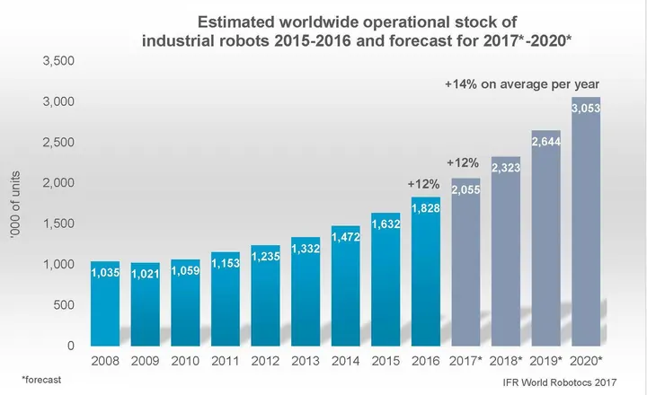
Số robot đang hoạt động trên thế giới tăng đều mỗi nămMật độ robot trên 10.000 công nhân ngành chế tạo, năm 2017
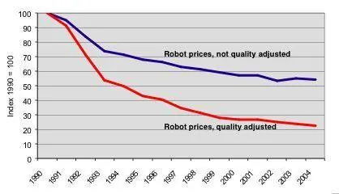
Giá robot giảm mạnh từ 1990, nhất là khi tính theo chất lượng
Ví dụ 1.2: Đọc biểu đồ mật độ robot
Mật độ robot là số robot trên 10.000 công nhân. Năm 2017 mức trung bình thế giới là 85, Hàn Quốc dẫn đầu với khoảng 710.
Một nhà máy có 2.000 công nhân. Nếu đạt mức trung bình thế giới thì nhà máy có 2.000 × 85 / 10.000 = 17 robot. Nếu đạt mức Hàn Quốc thì có 2.000 × 710 / 10.000 = 142 robot, gấp hơn 8 lần.
1.4 Các bộ phận của một tay máy
Robot chia làm hai nhóm lớn: tay máy (đế gắn cố định) và robot di động (đế di chuyển được). Môn học này chủ yếu nói về tay máy.
Tay máy là một chuỗi khâu cứng (link) nối với nhau bằng khớp (joint). Đọc tên bộ phận trên hình robot Yaskawa Motoman GP7, đi từ đế lên:
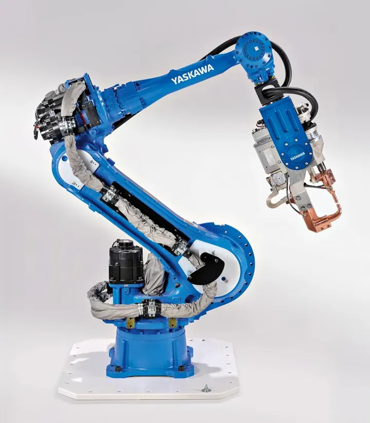
Robot Yaskawa Motoman GP7: đế, vai, cánh tay trên, khuỷu, cẳng tay, cổ tay và đầu công tác
Đế (base) gắn cố định xuống sàn. Mọi phép đo vị trí đều lấy gốc ở đây.
Cánh tay gồm vai, cánh tay trên, khuỷu, cẳng tay. Cánh tay lo tầm với: đưa đầu tay tới vị trí mong muốn.
Cổ tay (wrist) lo sự khéo léo: xoay để chỉnh hướng của dụng cụ.
Đầu công tác (end-effector) làm việc: tay kẹp, mỏ hàn, súng sơn, giác hút.
Vị trí và hướng gộp lại gọi là tư thế (pose). Ví dụ: cầm cốc nước thì vị trí là chỗ cái cốc, hướng là cốc thẳng đứng hay nghiêng. Cùng một vị trí mà sai hướng là đổ nước.
1.5 Khớp và bậc tự do
Khớp quay R (revolute) Hai khâu xoay quanh một trục. Biến khớp là góc θ. Ví dụ: bản lề cửa, khuỷu tay.
Khớp tịnh tiến P (prismatic) Hai khâu trượt dọc một trục. Biến khớp là độ dài d. Ví dụ: ngăn kéo, xi lanh.
Ký hiệu chung của biến khớp là qᵢ: khớp quay thì qᵢ = θᵢ, khớp tịnh tiến thì qᵢ = dᵢ.
Bậc tự do (DOF) là số đại lượng độc lập cần biết để xác định trạng thái cơ cấu. Với chuỗi hở (khâu nối tiếp khâu, không khép vòng), mỗi khớp góp đúng 1 bậc, nên số DOF = số khớp.
Một vật rắn tự do trong không gian có 6 bậc tự do: 3 cho vị trí (x, y, z) và 3 cho hướng (ba góc xoay). Vì vậy robot công nghiệp đa năng thường có 6 khớp: 3 khớp đầu cho cánh tay (vị trí), 3 khớp sau cho cổ tay (hướng).
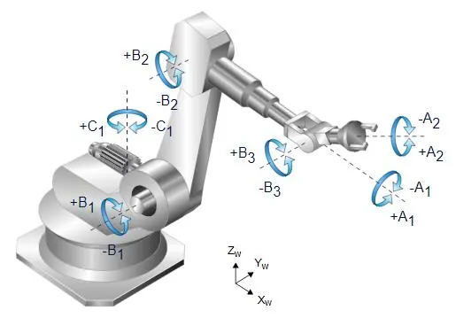
Các trục khớp của một tay máy 6 bậc, mũi tên cho biết chiều quay dương
Ví dụ 1.3: Đếm bậc tự do
Motoman GP7: 6 khớp quay (S, L, U, R, B, T) nên có 6 DOF. Nó đặt được dụng cụ ở mọi vị trí và mọi hướng trong vùng làm việc.
Robot SCARA: 3 khớp quay và 1 khớp tịnh tiến, có 4 DOF: x, y, z và một góc xoay quanh trục đứng. Đủ cho việc gắp đặt linh kiện trên mặt phẳng.
Máy in 3D: 3 khớp tịnh tiến, có 3 DOF, chỉ chọn được vị trí đầu phun.
Cánh tay người (không tính bàn tay): vai 3, khuỷu 1, cổ tay 3, tổng 7 DOF. Thừa 1 bậc so với 6, nên ta giữ yên bàn tay trên bàn mà vẫn xoay được khuỷu. Robot 7 bậc như vậy gọi là robot dư bậc.
Robot trong lớp học ảo: 3 khớp quay, 3 DOF, chỉ điều khiển được vị trí đầu tay, chưa chọn được hướng.
1.6 Không gian làm việc
Không gian làm việc (workspace) là vùng mà đầu tay với tới được. Hình dạng và thể tích của nó phụ thuộc vào cấu trúc tay máy (loại khớp, chiều dài khâu) và giới hạn góc của từng khớp.
Tay phẳng 2 khâu a₁ = 0,4 m, a₂ = 0,3 m, khớp quay tự do: không gian làm việc là hình vành khăn.
Vì sao là vành khăn? Khi duỗi thẳng, đầu tay cách gốc xa nhất a₁ + a₂. Khi gập hết, đầu tay cách gốc gần nhất |a₁ − a₂|. Mọi khoảng cách ở giữa đều đạt được bằng cách gập khuỷu một phần, rồi xoay khớp 1 để quét đủ một vòng.
Ví dụ 1.4: Điểm nào với tới được?
Với tay phẳng a₁ = 0,4 m, a₂ = 0,3 m ở trên, điều kiện là 0,1 ≤ r ≤ 0,7 với r = √(x² + y²).
Điểm (0,5; 0,3): r = √(0,25 + 0,09) = √0,34 ≈ 0,583 m. Nằm trong vành khăn, với tới được.
Điểm (0,8; 0): r = 0,8 m > 0,7 m. Quá xa, duỗi thẳng tay cũng không tới.
Điểm (0,05; 0): r = 0,05 m < 0,1 m. Quá gần, gập hết tay vẫn còn cách 0,1 m.
Robot thật có giới hạn góc khớp nên vùng làm việc bị khoét bớt. Nhà sản xuất luôn vẽ vùng này trong catalogue, như hình dưới của GP7: tầm với lớn nhất là R927, tức 927 mm tính từ trục khớp 1.
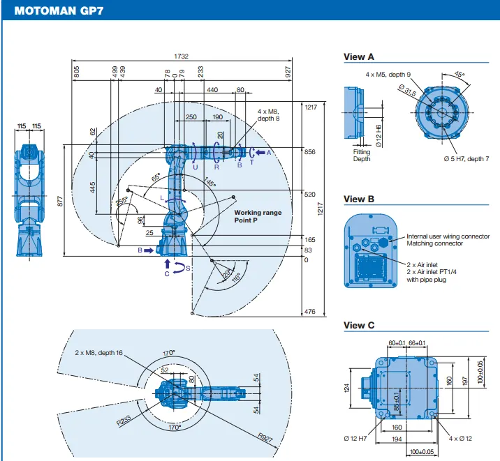
Vùng làm việc của GP7 (màu xanh nhạt) nhìn từ cạnh và nhìn từ trên. Chỗ khuyết phía sau là do giới hạn góc khớp S ±170°.
1.7 Năm kiểu cấu hình kinh điển
Người ta phân loại tay máy theo loại và thứ tự của 3 khớp đầu tiên tính từ đế, vì 3 khớp này quyết định hình dạng vùng làm việc:
Kiểu
Khớp
Workspace
Đặc điểm và ứng dụng
Descartes
PPP
Hộp chữ nhật
Mỗi khớp ứng với một trục x, y, z nên đi thẳng rất dễ. Cứng vững, chính xác. CNC, in 3D, cổng trục gantry.
Trụ
RPP
Trụ rỗng
Thay khớp P đầu tiên của Descartes bằng khớp quay. Bốc xếp, cấp phôi cho máy công cụ.
Cầu
RRP
Một phần cầu rỗng
Thay tiếp khớp P thứ hai bằng khớp quay. Unimate, robot Stanford, hàn điểm đời cũ.
SCARA
RRP, ba trục song song
Trụ rỗng
Cứng theo phương đứng, mềm theo phương ngang. Lắp ráp điện tử tốc độ cao.
Dạng người
RRR
Gần cầu, phức tạp
Trục 1 vuông góc với trục 2 và 3, hai trục sau song song. Khéo léo nhất. Hàn, sơn, gắp, đa năng.
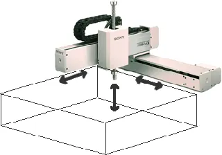
Descartes (PPP): ba trục trượt vuông góc
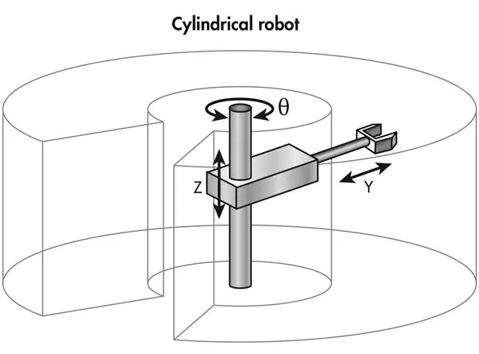
Trụ (RPP): xoay θ, nâng z, vươn ra yCầu (RRP): Unimate xoay, gật và vươn tay
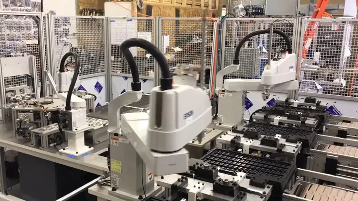
SCARA trên dây chuyền lắp rápDạng người (RRR): khớp 2 là vai, khớp 3 là khuỷu
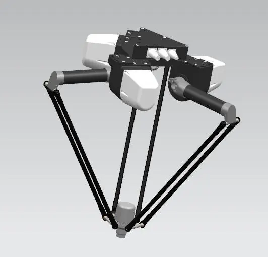
Robot song song Delta
Robot trong lớp học ảo thuộc kiểu dạng người RRR: khớp 1 xoay đế, khớp 2 là vai, khớp 3 là khuỷu.
Ngoài chuỗi hở còn có robot song song (chuỗi kín), ví dụ robot Delta: nhiều nhánh cùng nối từ đế tới đầu tay. Ưu điểm là rất cứng nên chạy được tốc độ cao (gắp bánh kẹo, dược phẩm hàng trăm lần mỗi phút). Nhược điểm là vùng làm việc nhỏ.
Ví dụ 1.5: Chọn kiểu robot cho từng việc
Gắp linh kiện đặt lên bảng mạch điện thoại, mọi thao tác trên mặt phẳng, cần nhanh: SCARA.
Hàn thân xe ô tô, mỏ hàn phải nghiêng nhiều hướng để luồn vào khe: dạng người 6 bậc.
Nhặt bánh quy trên băng tải và xếp vào hộp, 150 lần mỗi phút: Delta.
Di chuyển cẩu hàng nặng trên vùng rộng hình chữ nhật trong kho: Descartes kiểu cổng trục.
1.8 Robot di động
Robot di động có đế chạy được, nên đi tự do trong môi trường. Hai nhóm chính:
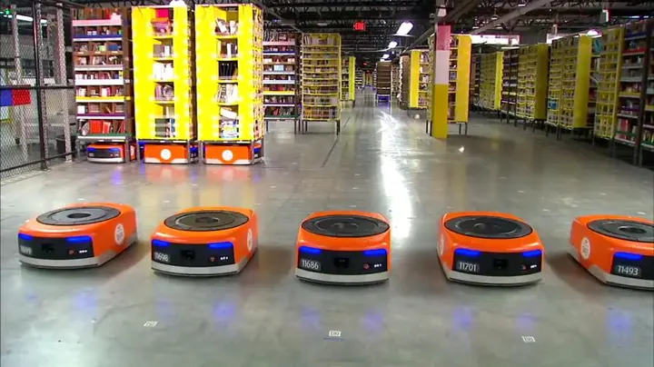
Robot bánh xe chở kệ hàng trong kho
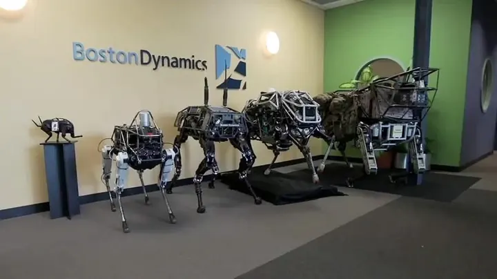
Robot có chân của Boston Dynamics
Robot bánh xe: một thân cứng và hệ bánh xe. Đơn giản, chạy nhanh trên nền phẳng.
Robot có chân: nhiều khâu nối bằng khớp (thường là khớp quay). Đi được địa hình gồ ghề, cầu thang nhưng khó điều khiển hơn nhiều.
Gắn một tay máy lên robot di động ta được tay máy di động (mobile manipulator): vừa khéo léo như tay máy, vừa đi lại không giới hạn.
1.9 Đọc thông số một robot thật
Khi chọn robot, kỹ sư đọc bảng thông số như bảng của GP7 dưới đây. Các dòng quan trọng nhất:
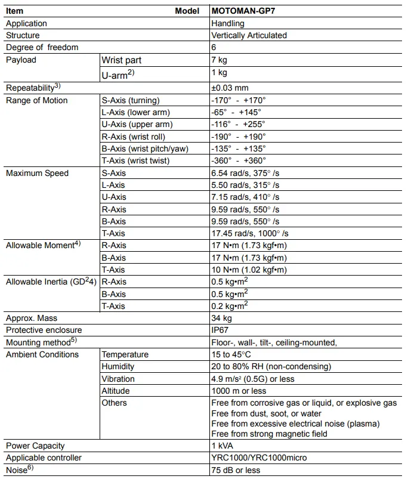
Bảng thông số cơ bản của Yaskawa Motoman GP7
Dòng
Giá trị GP7
Nghĩa là
Structure
Vertically articulated
Kiểu dạng người, các khớp quay
Degree of freedom
6
Chọn được cả vị trí và hướng của dụng cụ
Payload
7 kg
Khối lượng lớn nhất gắn ở cổ tay, tính cả tay kẹp
Repeatability
±0,03 mm
Quay lại một điểm đã dạy, sai lệch không quá 0,03 mm (xem Chương 2)
Range of motion
S: −170° … +170°
Giới hạn góc của từng khớp
Maximum speed
S: 375°/s
Tốc độ quay lớn nhất của từng khớp
Approx. mass
34 kg
Khối lượng robot
Ví dụ 1.6: Tính nhanh từ bảng thông số
Khớp S quay 90° mất ít nhất bao lâu? t = 90 / 375 ≈ 0,24 s (chưa tính thời gian tăng tốc, giảm tốc nên thực tế lâu hơn).
Khớp S quét được bao nhiêu độ? 170 − (−170) = 340°. Còn 20° phía sau không với tới, đó là chỗ khuyết trên hình vùng làm việc.
Tỉ số tải trọng trên khối lượng: 7 / 34 ≈ 0,21. Tay máy nối tiếp thường chỉ mang được khoảng 1/5 đến 1/10 khối lượng của chính nó.
Gắp chi tiết 6 kg bằng tay kẹp 1,5 kg được không? Tổng 7,5 kg > 7 kg, không được. Phải chọn tay kẹp nhẹ hơn hoặc robot lớn hơn.
1.10 Bản đồ của môn học
Muốn robot làm được việc phải giải ba bài toán nối tiếp:
Mô hình hóa. Động học mô tả chuyển động của robot so với một hệ tọa độ cố định, chưa quan tâm lực. Động học thuận (Ch.4): biết góc khớp, tìm tư thế đầu tay, luôn có đúng một đáp án. Động học ngược (Ch.5): biết tư thế muốn tới, tìm góc khớp, có thể nhiều nghiệm hoặc vô nghiệm. Động học vi phân (Ch.6) nối vận tốc khớp với vận tốc đầu tay.
Lập quỹ đạo. Việc gắp và thả chỉ cần cho điểm đầu, điểm cuối (chuyển động điểm tới điểm). Việc hàn, cắt thì đầu tay phải bám theo một đường cho trước. Lập quỹ đạo là tính xem mỗi thời điểm các khớp phải ở đâu.
Điều khiển. Quỹ đạo vừa tính là giá trị đặt. Bộ điều khiển tính lực, mômen mà động cơ phải sinh ra để robot bám đúng, dựa vào tín hiệu cảm biến (Ch.2).
Tự kiểm traRobot SCARA có mấy bậc tự do?3 khớp quay + 1 khớp tịnh tiến = 4 DOF.Vì sao robot đa năng thường có 6 khớp?Vật rắn trong không gian có 6 bậc tự do: 3 vị trí, 3 hướng. Cần ít nhất 6 khớp mới đặt dụng cụ ở vị trí và hướng tùy ý.Tay phẳng 2 khâu a₁ = a₂ = 0,5 m với tới được điểm cách gốc 0,05 m không?Được. Bán kính trong |a₁ − a₂| = 0, nên robot với tới cả tâm.SCARA và robot cầu đều là RRP, khác nhau ở đâu?SCARA có ba trục khớp song song (thường thẳng đứng). Robot cầu có trục 1 vuông góc với trục 2.Robot song song mạnh và yếu ở điểm nào so với tay máy nối tiếp?Mạnh: cứng vững, nhẹ, chạy rất nhanh. Yếu: vùng làm việc nhỏ.Cánh tay (arm) và cổ tay (wrist) mỗi phần lo việc gì?Cánh tay lo vị trí (tầm với). Cổ tay lo hướng (sự khéo léo). Đầu công tác thực hiện nhiệm vụ.
Chương 2
Các thành phần của robot
Robot là một hệ thống gồm bốn khối: cơ khí, chấp hành, cảm biến và giám sát. Chương này đi qua từng khối: bộ truyền, động cơ, cảm biến. Toán chỉ là công thức vật lý cơ bản, nhưng có nhiều ví dụ số để bạn quen với độ lớn thật của các đại lượng.
2.1 Robot nhìn như một hệ thống
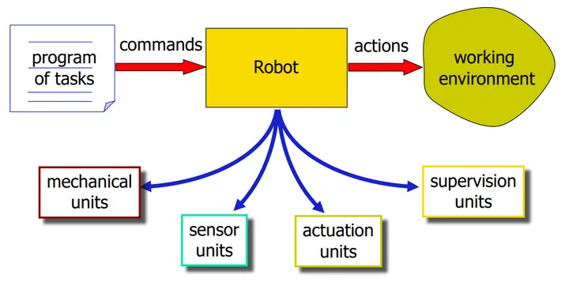
Chương trình gửi lệnh tới robot, robot tác động lên môi trường. Bên trong có bốn khối: cơ khí, cảm biến, chấp hành, giám sát.
Khối
Gồm
Giống cơ thể người
Cơ khí
Khâu cứng nối bằng khớp quay hoặc tịnh tiến. Chia ra phần mang (tầm với), cổ tay (khéo léo), đầu công tác (làm việc)
Xương, khớp
Cảm biến
Cảm biến nội: góc, vận tốc khớp. Cảm biến ngoại: lực, khoảng cách, hình ảnh
Cảm giác tay chân, mắt, da
Chấp hành
Động cơ (điện, thủy lực, khí nén) và thuật toán điều khiển chuyển động
Cơ bắp
Giám sát
Lập kế hoạch nhiệm vụ, trí tuệ nhân tạo, suy luận
Não
Ví dụ 2.1: Robot hàn có những khối nào?
Khung 6 khớp quay và mỏ hàn là cơ khí. Sáu động cơ servo AC kèm hộp số là chấp hành. Encoder ở mỗi động cơ là cảm biến nội, camera dò đường hàn là cảm biến ngoại. Tủ điều khiển chạy chương trình hàn là giám sát.
2.2 Dòng công suất
Mỗi khớp được dẫn động bởi một chuỗi: nguồn năng lượng, bộ khuếch đại (driver), động cơ, bộ truyền, rồi tới khâu. Ở mỗi khối một phần công suất mất đi vì ma sát, tỏa nhiệt.
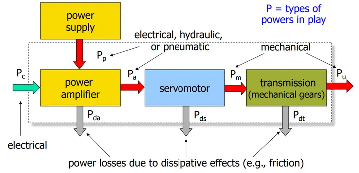
Dòng công suất: nguồn → khuếch đại → động cơ → bộ truyền → khâu. Pd là công suất mất ở mỗi khối.
P = F·v (tịnh tiến, W = N·m/s) P = τ·ω (quay, ω tính bằng rad/s) η = Pra / Pvào < 1
Đổi đơn vị hay dùng: ω (rad/s) = n (vòng/phút) × 2π / 60. Ví dụ 3000 vòng/phút ≈ 314,2 rad/s.
Ví dụ 2.2: Công suất để nâng vật
Robot nâng thẳng đứng vật 7 kg với vận tốc 0,5 m/s. Hiệu suất cả chuỗi dẫn động là 70%. Động cơ cần bao nhiêu công suất?
Lực cần thắng là trọng lực: F = m·g = 7 × 9,81 = 68,7 N.
Công suất ở đầu ra: Pra = F·v = 68,7 × 0,5 ≈ 34,3 W.
Công suất động cơ phải cấp: Pvào = Pra / η = 34,3 / 0,7 ≈ 49 W. Khoảng 15 W biến thành nhiệt.
2.3 Bộ truyền
Bộ truyền nối động cơ với khâu. Nó làm ba việc:
Đổi lượng: động cơ điện quay nhanh nhưng mômen nhỏ, còn khớp cần quay chậm với mômen lớn.
Đổi dạng: biến chuyển động quay của động cơ thành chuyển động thẳng cho khớp tịnh tiến.
Dời chỗ động cơ về gần đế (dùng đai, xích), để phần tay đang chuyển động nhẹ hơn, robot nhanh hơn.
Bộ truyền tỉ số n > 1 (giảm tốc):
ωkhớp = ωđộng cơ / n τkhớp = η · n · τđộng cơ
Bánh răng: đổi hướng trục, đổi tỉ số. Nhược điểm: biến dạng, khe hở (backlash)
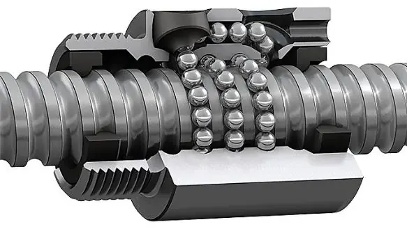
Vít me bi: biến quay thành tịnh tiến. Nhược điểm: ma sát, đàn hồi, khe hở
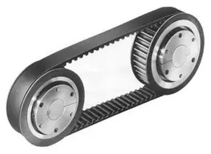
Đai răng, xích: đặt động cơ xa khớp. Đai thì mềm, xích thì rung ở tốc độ cao
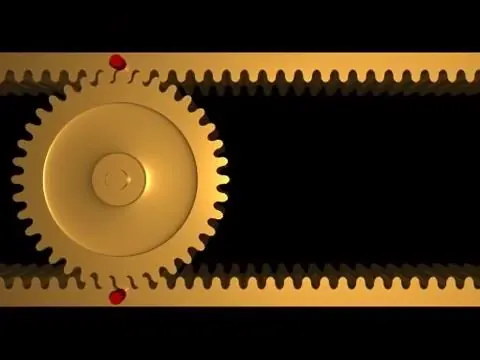
Bánh răng thanh răng: quay thành tịnh tiếnHộp số hành tinh: gọn, đồng trục
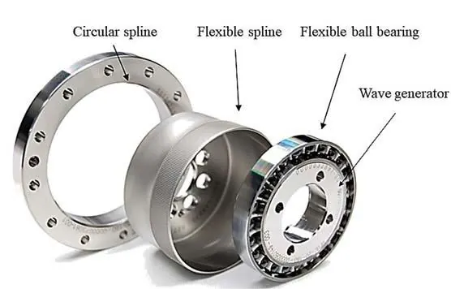
Harmonic drive: vòng răng cứng, vòng răng mềm, bộ tạo sóng
Harmonic drive là bộ truyền đặc trưng của robot công nghiệp. Bộ tạo sóng hình elip quay bên trong làm vòng răng mềm (flexspline) biến dạng, ăn khớp với vòng răng cứng ở hai điểm. Mỗi vòng quay của bộ tạo sóng, vòng mềm chỉ lùi lại vài răng, nên tỉ số rất lớn (tới 150–200:1) trong một khối nhỏ, đồng trục và gần như không có khe hở. Nhược điểm là vòng mềm có đàn hồi.
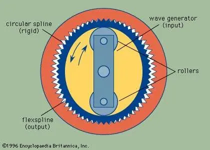
Nguyên lý harmonic drive: wave generator (vào), flexspline (ra), circular spline (cố định)
Ví dụ 2.3: Hộp số giảm tốc
Động cơ 3000 vòng/phút, mômen 0,5 N·m, hộp số n = 100, hiệu suất 80%.
Tốc độ khớp: 3000 / 100 = 30 vòng/phút.
Mômen khớp lý tưởng: 100 × 0,5 = 50 N·m. Có hiệu suất: 0,8 × 50 = 40 N·m.
Kiểm tra công suất: động cơ 0,5 × 314,2 ≈ 157 W, khớp 40 × 3,14 ≈ 126 W, đúng bằng 80% của 157 W.
Ví dụ 2.4: Vít me cho khớp tịnh tiến
Vít me có bước p = 5 mm (mỗi vòng quay đai ốc tiến 5 mm), động cơ quay 1500 vòng/phút với mômen 1 N·m, hiệu suất 90%.
Vận tốc thẳng: v = 1500 / 60 × 5 = 125 mm/s.
Lực đẩy: công suất vào bằng ra nên F·v = η·τ·ω, suy ra F = 2π·η·τ / p = 2π × 0,9 × 1 / 0,005 ≈ 1131 N, đủ đẩy vật hơn 100 kg.
2.4 Chọn tỉ số truyền tối ưu
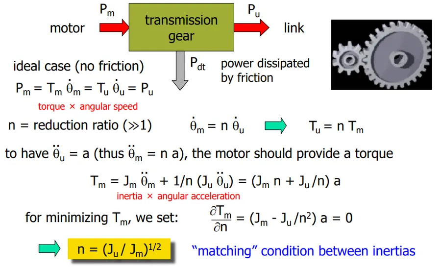
Slide: điều kiện "phối hợp quán tính" giữa động cơ và tải
Động cơ có quán tính rôto Jm, tải có quán tính Jl. Muốn khớp tăng tốc với gia tốc góc a thì rôto phải tăng tốc n·a. Mômen động cơ cần (bỏ qua ma sát):
τm = Jm·(n·a) + (Jl·a)/n = (Jm·n + Jl/n)·a
n nhỏ thì tải "nặng" với động cơ, n lớn thì động cơ tốn sức quay chính rôto của nó. Đạo hàm theo n bằng 0 cho:
ntối ưu = √(Jl / Jm)
Tức là quán tính tải quy về trục động cơ (Jl/n²) bằng đúng quán tính rôto Jm.
Ví dụ 2.5: Thử ba tỉ số truyền
Jm = 10⁻⁴ kg·m², Jl = 1 kg·m². Tỉ số tối ưu: n = √(1 / 10⁻⁴) = 100. So sánh hệ số (Jm·n + Jl/n):
n
Jm·n
Jl/n
Tổng
50
0,005
0,020
0,025
100
0,010
0,010
0,020 (nhỏ nhất)
200
0,020
0,005
0,025
2.5 Động cơ
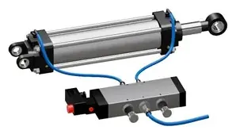
Xi lanh khí nén và van
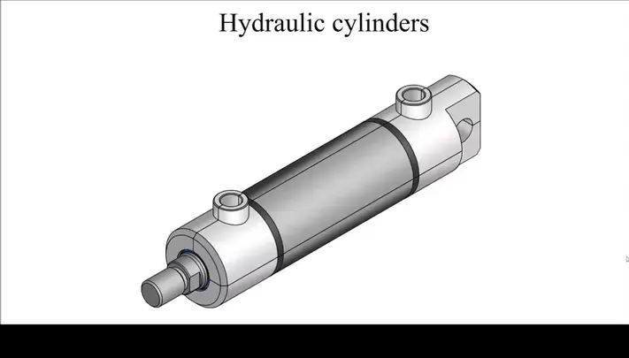
Xi lanh thủy lực
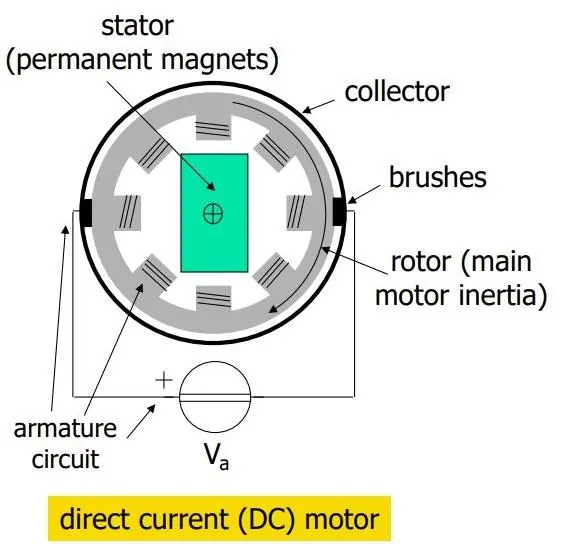
Động cơ DC: stato nam châm, rôto, chổi than, cổ góp
Loại
Ưu điểm
Nhược điểm, dùng ở đâu
Khí nén
Rẻ, đơn giản, sạch
Khí bị nén nên khó điều khiển chính xác, không bám quỹ đạo được. Dùng đóng mở tay kẹp, giác hút
Thủy lực
Mômen rất lớn ở tốc độ thấp không cần hộp số, tỉ số công suất/khối lượng tốt, không phát tia lửa
Cần trạm bơm, cồng kềnh, rò dầu, hiệu suất thấp, đắt. Robot rất nặng, máy công trình
DC có chổi than
Điều khiển đơn giản
Chổi than mòn, cần bảo dưỡng, sinh bụi và tia lửa. Băng tải, thiết bị nhỏ
AC servo nam châm vĩnh cửu
Hiệu suất cao, nhỏ nhẹ, ít bảo dưỡng
Cần cảm biến vị trí rôto. Lựa chọn phổ biến nhất cho robot, máy công cụ
"Servo" nghĩa là điều khiển vòng kín: có cảm biến đo vị trí hoặc vận tốc để bộ điều khiển liên tục sửa cho đúng giá trị đặt. Động cơ servo cho robot cần: quán tính nhỏ, tỉ số công suất/khối lượng cao, tăng tốc và đảo chiều nhanh, dải tốc độ rộng (1 tới 2000 vòng/phút), định vị chính xác ít nhất 1/1000 vòng, mômen êm ở tốc độ thấp, công suất từ 10 W tới 10 kW.
Với động cơ điện, mômen tỉ lệ với dòng điện: τ = kt·i. Đường đặc tính mômen theo tốc độ cho biết động cơ kéo được bao nhiêu ở mỗi tốc độ:
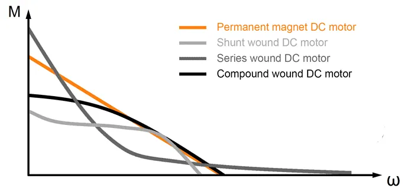
Đặc tính mômen theo tốc độ của các loại động cơ DC
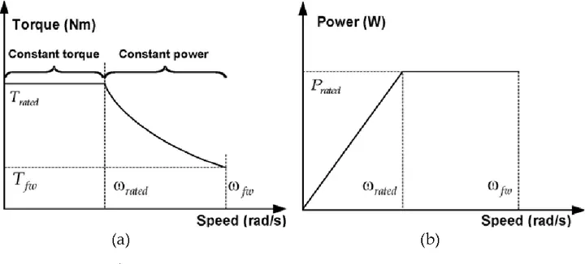
Động cơ AC servo: mômen không đổi tới tốc độ định mức, sau đó công suất không đổi
Ví dụ 2.6: Đọc thông số động cơ servo
Một động cơ AC servo ghi 400 W, 3000 vòng/phút, kt = 0,5 N·m/A.
Mômen định mức: τ = P / ω = 400 / 314,2 ≈ 1,27 N·m.
Dòng định mức: i = τ / kt = 1,27 / 0,5 ≈ 2,5 A.
Dưới 3000 vòng/phút động cơ giữ được 1,27 N·m. Trên 3000 vòng/phút mômen giảm dần để công suất không vượt 400 W.
2.6 Tính chất của một phép đo
Độ chính xác (accuracy): giá trị đo gần với giá trị đúng tới mức nào.
Độ lặp lại (repeatability): đo lại nhiều lần cùng một đại lượng thì kết quả giống nhau tới mức nào.
Độ ổn định: giữ được đặc tính theo thời gian, nhiệt độ.
Độ phân giải: thay đổi nhỏ nhất mà cảm biến nhận ra. Sai số tuyến tính: độ lệch lớn nhất so với đường thẳng lý tưởng. Offset: giá trị ra khi đầu vào bằng 0.
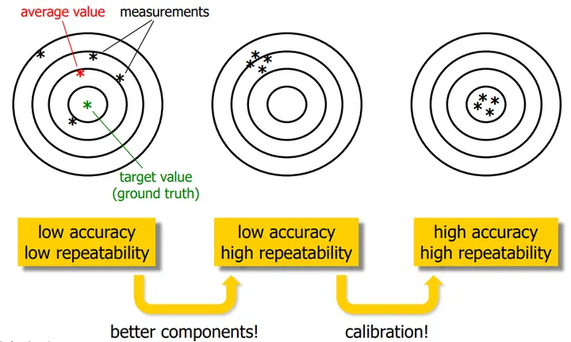
Trái: kém cả hai. Giữa: lặp lại tốt, chính xác kém. Phải: tốt cả hai
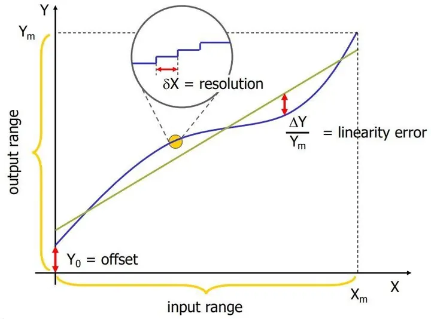
Độ phân giải δX, sai số tuyến tính ΔY và offset Y₀
Với robot: độ chính xác là robot tới gần một điểm cho bằng tọa độ tới mức nào. Nó phụ thuộc sai số gia công, lắp ráp, khâu bị uốn, khe hở bánh răng, tải thay đổi, sai số làm tròn khi tính. Cải thiện bằng hiệu chuẩn động học. Độ lặp lại là robot quay về một điểm đã dạy trước đó gần tới mức nào. Nó chỉ phụ thuộc bộ điều khiển và độ phân giải đo. Thường độ lặp lại tốt hơn độ chính xác rất nhiều, vì vậy robot công nghiệp hay được "dạy" bằng tay cầm (teach pendant).
Ví dụ 2.7: Robot chính xác hay lặp lại tốt?
Lệnh cho robot tới x = 500,00 mm, đo 5 lần được 500,42; 500,45; 500,40; 500,44; 500,43 mm.
Trung bình: 2502,14 / 5 = 500,428 mm. Lệch so với 500,00 khoảng 0,43 mm: độ chính xác kém.
Độ trải: 500,45 − 500,40 = 0,05 mm, tức khoảng ±0,025 mm: độ lặp lại tốt, cỡ GP7 (±0,03 mm).
Kết luận: giống hình ở giữa. Cần hiệu chuẩn để dời cả chùm điểm về đúng tâm.
2.7 Cảm biến nội: đo vị trí và vận tốc khớp
Cảm biến nội (proprioceptive) đo trạng thái bên trong robot: vị trí, vận tốc khớp, có khi cả mômen khớp. Đo dịch chuyển thẳng có biến trở, LVDT. Đo góc có biến trở, resolver, cảm biến Hall và phổ biến nhất là encoder quang.
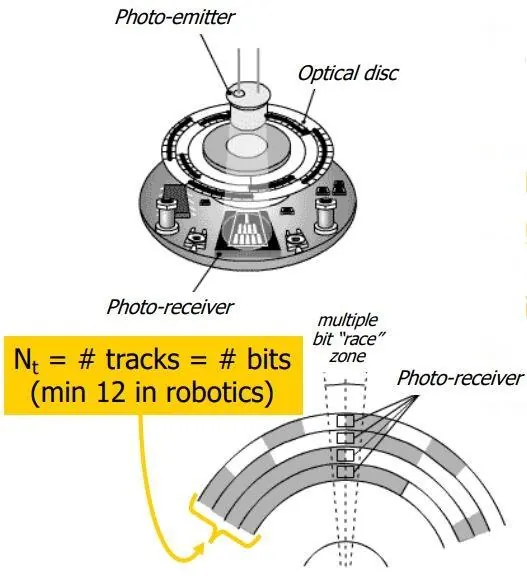
Encoder tuyệt đối: đĩa nhiều rãnh mã, mỗi rãnh một bit
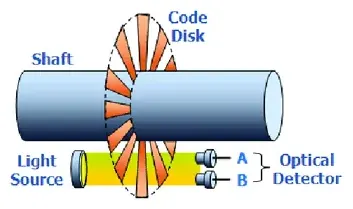
Encoder tương đối: đĩa có khe, đèn và cảm biến quang A, B
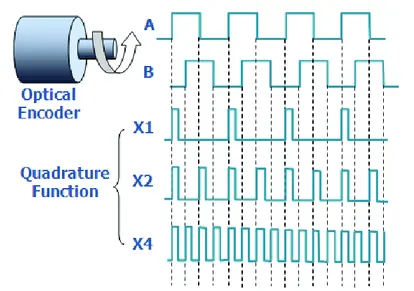
Hai kênh A, B lệch pha 90°. Đếm cả sườn lên và xuống được gấp 4 (X4)
Encoder tuyệt đối Nt rãnh mã cho 2Nt vị trí mỗi vòng. Độ phân giải 360° / 2Nt. Bật máy là biết ngay vị trí, không cần về gốc. Robot thường dùng ít nhất 12 rãnh.
Encoder tương đối Ba rãnh A, B, Z. Đếm xung để biết góc đã quay, A sớm pha hay trễ pha so với B cho biết chiều quay, Z đánh dấu điểm 0. Rẻ hơn nhưng bật máy phải về gốc (homing).
Ví dụ 2.8: Độ phân giải encoder
Encoder tuyệt đối 13 bit: 2¹³ = 8192 vị trí, độ phân giải 360 / 8192 ≈ 0,044°.
Encoder tương đối 1000 xung/vòng, giải mã X4: 4000 số đếm/vòng, độ phân giải 360 / 4000 = 0,09°.
Gắn encoder ở trục động cơ, trước hộp số n = 100: mỗi số đếm ứng với 0,09 / 100 = 0,0009° ở khớp. Đó là lý do encoder thường gắn phía động cơ.
Khâu dài 0,5 m, sai 0,0009° ở khớp làm đầu khâu lệch 0,5 × 0,0009 × π/180 ≈ 0,000008 m = 0,008 mm.
Đo vận tốc: thường không có cảm biến riêng mà lấy đạo hàm số của vị trí: q̇k ≈ (qk − qk−1) / T, với T là chu kỳ lấy mẫu. Vì số đo có nhiễu và bị lượng tử hóa, người ta dùng công thức nhiều bước hoặc bộ lọc (Savitzky–Golay, Kalman).
Ví dụ 2.9: Tính vận tốc từ số đếm encoder
Encoder 4000 số đếm/vòng, chu kỳ T = 1 ms, giữa hai lần đọc tăng 40 số đếm.
Nếu chỉ tăng 1 số đếm thì vận tốc tính ra là 90°/s, còn 0 số đếm là 0°/s. Ở tốc độ thấp, kết quả nhảy bậc rất thô, vì vậy mới cần lọc.
2.8 Cảm biến ngoại: cảm nhận môi trường
Cảm biến ngoại (exteroceptive) đo tương tác của robot với môi trường: lực, khoảng cách, hình ảnh, cả âm thanh, khói, độ ẩm. Nhờ chúng robot điều khiển được lực tiếp xúc, tránh vật cản, tìm vật để gắp. Robot di động dùng chúng để định vị và vẽ bản đồ.
Cảm biến lực, mômen
Đo gián tiếp: đo biến dạng của một chi tiết đàn hồi chịu lực. Phần tử cơ bản là tấm điện trở biến dạng (strain gauge): dây kim loại bị kéo dài thì điện trở tăng.
GF = (ΔR / R) / (ΔL / L) ≈ 2
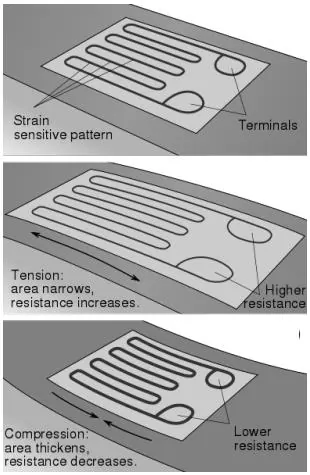
Strain gauge: kéo thì R tăng, nén thì R giảm
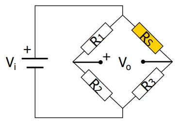
Cầu Wheatstone đo thay đổi điện trở rất nhỏ
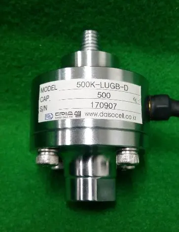
Cảm biến lực (load cell)
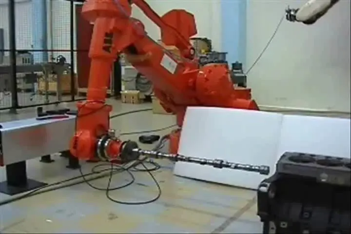
Robot mài, đánh bóng cần cảm biến lực
Ví dụ 2.10: Tín hiệu từ strain gauge
Strain gauge R = 350 Ω, GF = 2, dán lên thanh thép bị kéo giãn 500 µε (tức ΔL/L = 0,0005). Cầu một nhánh, điện áp cấp Vi = 10 V.
ΔR / R = GF × ΔL/L = 2 × 0,0005 = 0,001, nên ΔR = 0,35 Ω.
Điện áp ra gần đúng: Vo ≈ Vi/4 × ΔR/R = 10/4 × 0,001 = 2,5 mV.
Tín hiệu chỉ vài milivôn, nên luôn phải có mạch khuếch đại phía sau.
Cảm biến khoảng cách
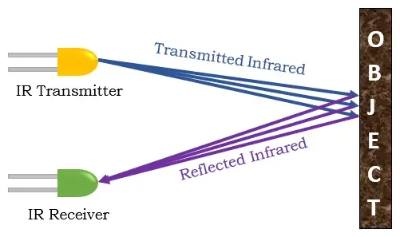
Hồng ngoại: đo cường độ ánh sáng phản xạ, tầm 4–30 cm hoặc 20–150 cm
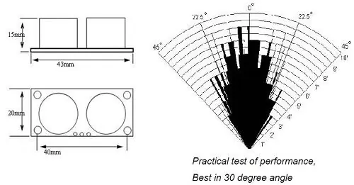
Siêu âm: búp sóng rộng, tốt nhất trong góc khoảng 30°Máy quét laser 2D (SICK): 0,2–64 m, góc quét 275°
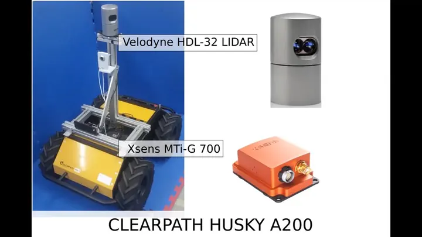
Robot di động mang LiDAR để vừa định vị vừa vẽ bản đồ (SLAM)
Hồng ngoại: đèn LED phát chùm tia, cảm biến quang nhận tia phản xạ. Rẻ, nhưng chỉ dùng trong nhà và phụ thuộc màu vật.
Siêu âm: phát sóng âm trên 20 kHz (thường 50 kHz), đo thời gian bay đi và về (time of flight): d = v·t / 2.
Laser: cùng nguyên lý thời gian bay nhưng dùng ánh sáng, rất chính xác. Máy quét laser quét cả một mặt phẳng.
Ví dụ 2.11: Thời gian bay
Siêu âm trong không khí v ≈ 343 m/s, vật cách 1 m: t = 2 × 1 / 343 ≈ 5,83 ms. Đo được t = 2,9 ms thì d = 343 × 0,0029 / 2 ≈ 0,50 m.
Laser với v = 3·10⁸ m/s, vật cách 1 m: t = 2 / (3·10⁸) ≈ 6,67 ns. Thời gian ngắn hơn cả triệu lần, nên mạch đo laser phải cực nhanh.
Thị giác máy
Camera là một ma trận điểm ảnh (pixel) biến ánh sáng thành điện. CCD tích điện ở từng pixel rồi đọc ra lần lượt. CMOS có mạch đọc ở từng pixel, đọc được pixel bất kỳ, rẻ và nhanh hơn, nên ngày nay phổ biến hơn. Ảnh được xử lý (lọc, tìm cạnh, nhận dạng vật) rồi gửi kết quả cho bộ điều khiển robot. Khi đó ta có điều khiển bằng thị giác (visual servoing).
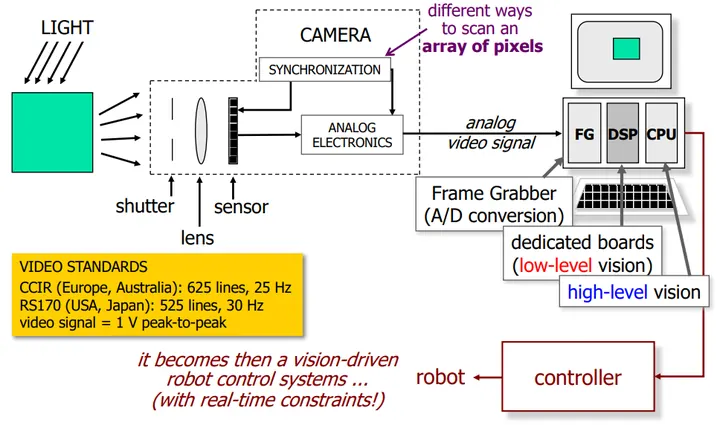
Hệ thống thị giác: đèn, ống kính, cảm biến, bộ thu ảnh, máy tính, bộ điều khiển robot
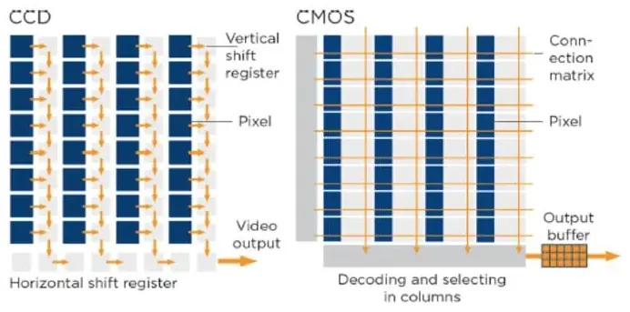
Cách đọc dữ liệu của cảm biến CCD và CMOS
Tự kiểm traĐộng cơ 2000 vòng/phút, 1,2 N·m, hộp số n = 80, hiệu suất 90%. Mômen và tốc độ ở khớp?Tốc độ 2000/80 = 25 vòng/phút. Mômen 0,9 × 80 × 1,2 = 86,4 N·m.Jm = 4·10⁻⁴ kg·m², Jl = 0,64 kg·m². Tỉ số truyền tối ưu?n = √(0,64 / 4·10⁻⁴) = √1600 = 40.Robot hàn phải dừng đúng góc, bám quỹ đạo chính xác. Chọn loại động cơ nào?Động cơ AC servo kèm encoder, điều khiển vòng kín. Khí nén không bám quỹ đạo được.Encoder tuyệt đối 12 rãnh có độ phân giải bao nhiêu?360 / 2¹² = 360 / 4096 ≈ 0,088°.Vì sao robot bật máy lên phải chạy về gốc?Vì dùng encoder tương đối: nó chỉ đếm góc đã quay, không biết vị trí ban đầu. Chạy tới rãnh Z (điểm 0) để đặt lại bộ đếm. Encoder tuyệt đối thì không cần.Cảm biến siêu âm đo được thời gian 11,7 ms. Vật cách bao xa?d = 343 × 0,0117 / 2 ≈ 2,0 m.Cảm biến nội và cảm biến ngoại khác nhau thế nào? Cho ví dụ.Cảm biến nội đo trạng thái của chính robot (encoder đo góc khớp). Cảm biến ngoại đo môi trường (camera, cảm biến lực ở cổ tay, laser).
Chương 3
Mô tả không gian và các phép biến đổi
Chương quan trọng nhất về công cụ toán. Toàn bộ Chương 4 thực chất chỉ là nhân liên tiếp các ma trận ở đây. Mỗi mục đều có ví dụ giải từng bước, phần lớn lấy đúng ví dụ trong slide của thầy, và có một hình kéo thả ở mục 3.8 để bạn tự thử.
3.1 Tư thế của vật rắn
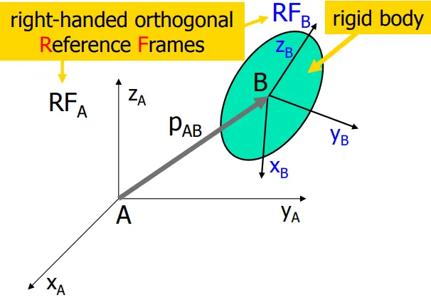
Gắn hệ {B} lên vật. Vị trí là vectơ pAB từ gốc A tới gốc B, hướng là ba trục xB, yB, zB so với {A}.
Một vật rắn được mô tả đầy đủ bằng vị trí và hướng của nó so với một hệ tham chiếu {A}, gọi chung là tư thế. Cách làm: gắn chặt một hệ tọa độ {B} lên vật, vật đi đâu {B} đi theo đó.
Vị trí = gốc của {B} nhìn trong {A}, viết là vectơ 3×1 ᴬP_Borg.
Hướng = ba trục của {B} nhìn trong {A}, xếp thành ma trận quay 3×3:
ᴬR_B = [ ᴬX̂_B ᴬŶ_B ᴬẐ_B ]
Cột 1 là vectơ đơn vị x của {B} viết trong {A}, cột 2 là y, cột 3 là z. Mỗi phần tử là cosin góc giữa hai trục, ví dụ r₁₁ = X̂_B · X̂_A.
Mọi hệ tọa độ đều là hệ thuận: x × y = z (quy tắc bàn tay phải). Chiều quay dương: nắm tay phải, ngón cái theo trục, bốn ngón cuộn theo chiều dương.
Ví dụ 3.1: Viết ma trận quay bằng cách nhìn hình
{B} quay 90° quanh trục zA. Nhìn từ trên xuống: xB trỏ theo hướng yA, yB trỏ ngược hướng xA, zB trùng zA.
Kiểm tra: mỗi cột dài 1, các cột vuông góc nhau, cột 1 × cột 2 = cột 3. Đây đúng là R_Z(90°) ở mục sau.
3.2 Ba ma trận quay cơ bản
Viết tắt cθ = cos θ, sθ = sin θ. Mẹo nhớ: hàng và cột của trục quay giữ nguyên (số 1 và các số 0). Riêng R_Y có dấu trừ ở hàng dưới, vì chiều quay từ z sang x.
Tính chất: các cột trực chuẩn nên R⁻¹ = Rᵀ và det R = +1. Quay ngược lại chỉ cần chuyển vị: R_Z(30°)ᵀ = R_Z(−30°).
θ
0°
30°
45°
60°
90°
cos θ
1
0,866
0,707
0,5
0
sin θ
0
0,5
0,707
0,866
1
Ví dụ 3.2: Viết số cho R_Z(30°) và R_X(60°)
3.3 Ánh xạ: đổi hệ quan sát
Bài toán: biết tọa độ của điểm P trong {B} là ᴮP. Hỏi tọa độ của cùng điểm đó trong {A}? Điểm đứng yên, chỉ đổi người nhìn.
Hai hệ chỉ lệch nhau một góc quay
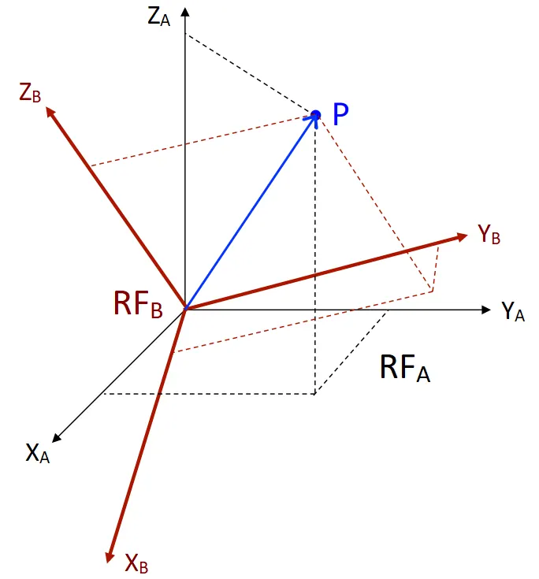
{A} và {B} chung gốc, {B} bị quay. P có tọa độ khác nhau trong mỗi hệ.
ᴬP = ᴬR_B · ᴮP
Mẹo "triệt tiêu chỉ số": chỉ số dưới B của R gặp chỉ số trên B của P thì "triệt tiêu", còn lại A.
Ví dụ 3.3 (slide, Example 1): {B} quay 30° quanh zA
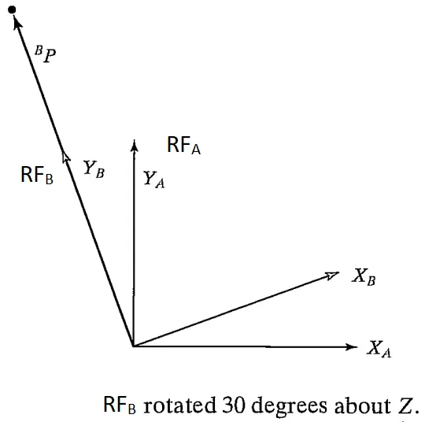
Cho ᴮP = (0; 3; 0). Tìm hướng của zB và tính ᴬP.
Quay quanh zA thì trục z không đổi: ᴬẐ_B = (0; 0; 1).
Kiểm tra bằng hình: P nằm trên trục yB, cách gốc 3. Trục yB nghiêng 30° sang trái so với yA, nên P có x âm và y hơi nhỏ hơn 3. Độ dài vẫn là √(1,5² + 2,598²) = 3, vì phép quay không làm đổi độ dài.
Hai hệ chỉ lệch nhau một đoạn tịnh tiến
{A} và {B} cùng hướng, gốc của {B} nằm ở ᴬP_Borg. Khi đó chỉ cần cộng:
Công thức tổng quát vừa nhân vừa cộng, ghép nhiều lần sẽ rất rối. Mẹo: thêm số 1 vào cuối vectơ (tọa độ thuần nhất) để gộp cả quay và tịnh tiến vào một phép nhân với ma trận 4×4:
ᴬP = ᴬT_B · ᴮP (P viết dạng [x y z 1]ᵀ)
Ô xanh 3×3 là ma trận quay, cột cam là vị trí gốc. Hàng cuối luôn là 0 0 0 1.
Ví dụ 3.6: Làm lại Ví dụ 3.5 bằng một phép nhân
Nhân với (5; 9; 0; 1):
Hàng 1: 0,866 × 5 − 0,5 × 9 + 0 + 12 × 1 = 11,830
Hàng 2: 0,5 × 5 + 0,866 × 9 + 0 + 8 × 1 = 18,294
Hàng 3: 0. Hàng 4: 1.
Kết quả ᴬP = (11,830; 18,294; 0; 1), giống hệt Ví dụ 3.5. Số 1 ở cuối vectơ chính là thứ "kéo" cột tịnh tiến vào phép cộng.
3.5 Toán tử: di chuyển điểm
Cùng một ma trận còn có cách hiểu thứ hai. Ánh xạ: điểm đứng yên, đổi hệ quan sát. Toán tử: chỉ có một hệ {A}, ta di chuyển điểm từ P₁ tới P₂.
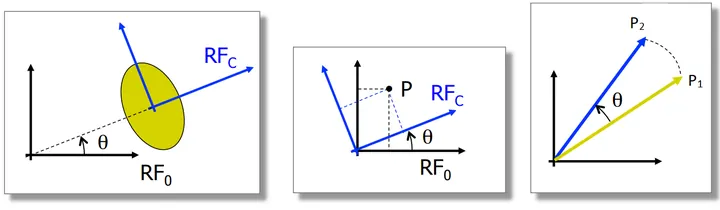
Toán tử quay: vectơ P₁ bị quay một góc θ thành P₂, cùng trong một hệ.
Quay ᴬP₂ = R_K(θ) · ᴬP₁
Tịnh tiến ᴬP₂ = ᴬP₁ + ᴬQ
Tổng quát: ᴬP₂ = T · ᴬP₁ (quay trước, rồi tịnh tiến)
Ví dụ 3.7 (slide, Example 3): quay điểm 30° quanh zA
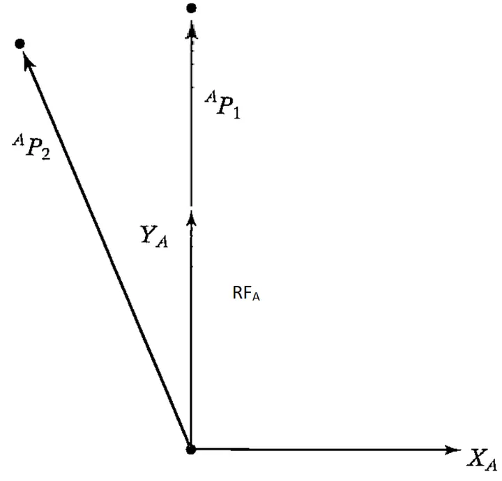
Cho ᴬP₁ = (0; 3; 0). Tính ᴬP₂.
ᴬP₂ = R_Z(30°)·ᴬP₁ = (−1,500; 2,598; 0). Cùng con số với Ví dụ 3.3: quay hệ đi +30° rồi đọc điểm cho kết quả giống hệt quay điểm đi +30° trong hệ cũ. Chỉ có cách hiểu là khác.
Ví dụ 3.8 (slide, Example 4): quay 30° rồi tịnh tiến (12; 8; 0)
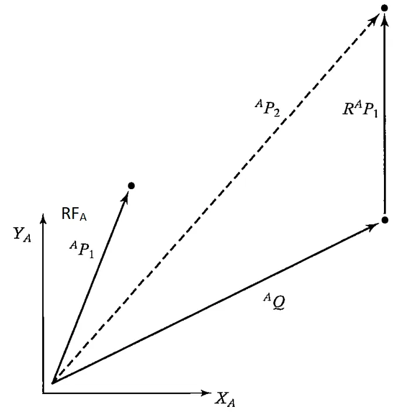
Cho ᴬP₁ = (5; 9; 0). Dùng đúng ma trận T ở Ví dụ 3.6: ᴬP₂ = T·ᴬP₁ = (11,830; 18,294; 0).
3.6 Ghép các phép biến đổi
Biết {C} so với {B} và {B} so với {A}, thì {C} so với {A} là tích:
Kiểm tra: ᴬT_B · ᴮT_A phải ra ma trận đơn vị. Nếu chỉ đổi dấu thành (−5; −4; 0) thì tích sẽ không ra I.
3.8 Hình kéo thả: tự thử ánh xạ
Kéo các thanh trượt để quay và dời hệ {B}, đổi tọa độ điểm P trong {B}. Hình vẽ và các bước tính ᴬP = ᴬR_B·ᴮP + ᴬP_Borg cập nhật ngay. Đây là bản phẳng (quay quanh z) của mọi thứ ở trên.
Thử tự trả lời: giữ ᴮP cố định, quay θ từ 0 tới 360° thì P vẽ ra đường gì trong {A}? (Đường tròn tâm là gốc {B}, bán kính |ᴮP|.)
3.9 Biểu diễn hướng bằng 3 góc
Ma trận quay có 9 số nhưng chỉ có 3 bậc tự do (6 ràng buộc: 3 cột dài 1, 3 cặp cột vuông góc). Vì vậy người ta hay mô tả hướng bằng 3 góc cho gọn. Hai cách hay dùng:
Góc Roll–Pitch–Yaw (X–Y–Z trục cố định)
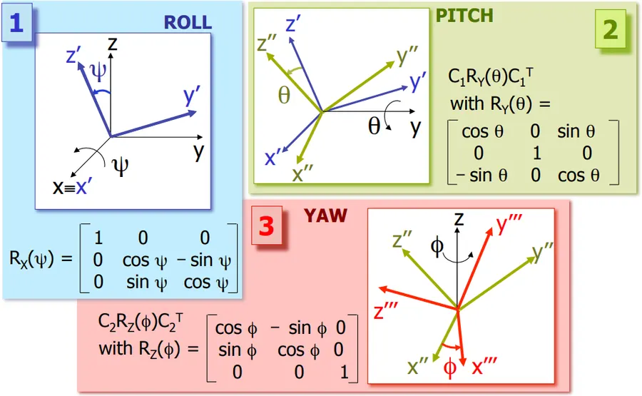
Lần lượt quay ψ quanh X (roll), θ quanh Y (pitch), φ quanh Z (yaw), cả ba quanh trục cố định của {A}.
Khi cθ = 0 (RPY) hoặc sθ = 0 (Euler), hai góc còn lại không tách riêng được, chỉ biết tổng hoặc hiệu của chúng. Đây là điểm suy biến của cách biểu diễn 3 góc, giống hiện tượng "khóa gimbal".
3.10 Bài tập trong slide (có lời giải)
Bài 1: {B} quay 60° quanh xA. Cho ᴮP = (2; 3; 5). Tính ᴬP.ᴬP = R_X(60°)·ᴮP = (2; 0,5 × 3 − 0,866 × 5; 0,866 × 3 + 0,5 × 5) = (2; −2,830; 5,098).Bài 2: {B} quay 60° quanh yA, tịnh tiến 7 theo xA, 4 theo yA. Cho ᴮP = (3; 5; 8). Tính ᴬP.R_Y(60°)·ᴮP = (0,5 × 3 + 0,866 × 8; 5; −0,866 × 3 + 0,5 × 8) = (8,428; 5; 1,402). Cộng (7; 4; 0): (15,428; 9; 1,402).Bài 3: Quay ᴬP₁ = (6; 5; 7) đi 30° quanh xA. Tính ᴬP₂.ᴬP₂ = (6; 0,866 × 5 − 0,5 × 7; 0,5 × 5 + 0,866 × 7) = (6; 0,830; 8,562).Bài 4: Quay ᴬP₁ = (4; 9; 7) đi 60° quanh yA, rồi tịnh tiến (5; 3; 2). Tính ᴬP₂.Quay: (0,5 × 4 + 0,866 × 7; 9; −0,866 × 4 + 0,5 × 7) = (8,062; 9; 0,036). Cộng (5; 3; 2): (13,062; 12; 2,036). Lưu ý: đáp án in trong slide quên cộng phần tịnh tiến.Bài 5: {B} quay 45° quanh xA, tịnh tiến (2; 3; 4). Tìm ᴮT_A.Rᵀ = R_X(−45°). Rᵀ·p = (2; 0,707 × 3 + 0,707 × 4; −0,707 × 3 + 0,707 × 4) = (2; 4,950; 0,707). Vậy ᴮT_A có R = [1 0 0; 0 0,707 0,707; 0 −0,707 0,707] và p = (−2; −4,950; −0,707). Lưu ý: lời giải trong slide dùng nhầm góc 90°.
Tự kiểm traVì sao R_Z(30°)·R_X(90°) ≠ R_X(90°)·R_Z(30°)?Phép nhân ma trận không giao hoán. Quay theo thứ tự khác nhau cho hướng cuối khác nhau.ᴬT_B có R = I và p = (1; 2; 3). Tìm ᴮT_A.R = Iᵀ = I, phần tịnh tiến = −I·(1; 2; 3) = (−1; −2; −3). Chỉ khi R = I thì mới được "chỉ đổi dấu p".RPY nhân bên trái hay bên phải?Bên trái, vì quay quanh trục cố định: R = R_Z(φ)·R_Y(θ)·R_X(ψ).Cột thứ 3 của ᴬR_B có ý nghĩa gì?Là vectơ đơn vị z của {B} viết trong {A}.Ma trận quay có 9 số. Có bao nhiêu số độc lập?3. Sáu ràng buộc: 3 cột có độ dài 1 và 3 cặp cột vuông góc.
Chương 4 · có robot bên cạnh
Động học thuận tay máy
Biết các góc khớp, tính ra đầu tay đang ở đâu và quay về hướng nào. Chương này chỉ dùng đúng một công cụ của Chương 3: nhân các ma trận biến đổi thuần nhất 4×4. Cái mới là cách đặt hệ tọa độ có quy tắc (quy ước Denavit–Hartenberg) để ai làm cũng ra cùng một bảng số. Kéo slider θ ở bảng bên cạnh để thấy ma trận và cánh tay thay đổi.
Lộ trình chương: 4.1 bài toán là gì → 4.2 khâu và khớp → 4.3 bốn tham số D-H → 4.4 cách đặt hệ trục → 4.5 ma trận D-H → 4.6 quy trình 6 bước → 4.7 đến 4.11 làm trọn các robot điển hình trong slide (tay phẳng 3 khâu, tay dạng người, SCARA, tay cầu, tay trụ, cổ tay cầu).
4.1 Động học thuận là gì?
Động học (kinematics) nghiên cứu chuyển động mà không quan tâm lực gây ra chuyển động. Bài toán về lực là động lực học (dynamics), học sau. Khi có thêm yếu tố thời gian thì ta nói tới vận tốc, gia tốc (Chương 6).
Cách làm: gắn một hệ tọa độ lên mỗi khâu của robot. Khi các khớp quay, các hệ này di chuyển theo, và động học là bài toán mô tả quan hệ giữa các hệ đó.
Hai cách mô tả cùng một tư thế: "bên trong" bằng các biến khớp q = (q₁, …, qₙ), và "bên ngoài" bằng ma trận ⁰Tₙ (hoặc r gồm vị trí và góc). Động học thuận là đi từ trái sang phải.
Không gian khớp (joint space) Tập các biến khớp q = (θ₁, θ₂, θ₃…). Đây là những gì động cơ điều khiển trực tiếp.
Không gian thao tác (operational / tool space) Vị trí p và hướng R của đầu tay. Đây là cái người dùng quan tâm: "gắp vật ở đâu".
Động học thuận: q ⟶ ⁰Tₙ(q) = [ R(q) p(q) ; 0 0 0 1 ]
Ký hiệu viết tắt dùng suốt chương: c₁ = cos θ₁, s₁ = sin θ₁, c₁₂ = cos(θ₁ + θ₂), s₂₃ = sin(θ₂ + θ₃), c₁₂₃ = cos(θ₁ + θ₂ + θ₃)…
4.2 Khâu, khớp và cặp động thấp
Tay máy là một chuỗi các vật rắn (gọi là khâu, link) nối với nhau bằng khớp (joint). Khi hai bề mặt trượt lên nhau tạo thành khớp, ta gọi là cặp động thấp (lower pair). Có 6 loại:
Sáu cặp động thấp. Robot công nghiệp gần như chỉ dùng hai loại đầu: khớp quay (R) và khớp tịnh tiến (P), mỗi loại 1 bậc tự do.
Khớp
Chuyển động
Biến khớp
Ký hiệu
Quay (revolute)
quay quanh một trục
góc θ
R
Tịnh tiến (prismatic)
trượt dọc một trục
độ dài d
P
Đánh số: robot n khớp có n + 1 khâu. Khâu 0 là đế (đứng yên). Khớp i nối khâu i − 1 với khâu i. Mỗi khớp có một trục khớp: trục mà khâu quay quanh hoặc trượt dọc theo.
Ví dụ 4.1: Đọc tên robot theo loại khớp
Tay dạng người (robot bên cạnh): 3 khớp quay → RRR.
SCARA: quay, quay, tịnh tiến, quay → RRPR.
Tay cầu (Stanford): quay, quay, tịnh tiến → RRP.
Tay trụ: quay, tịnh tiến, tịnh tiến → RPP.
4.3 Bốn tham số D-H
Ý tưởng của Denavit và Hartenberg (1955): nếu đặt hệ tọa độ theo đúng quy tắc, thì đi từ hệ {i−1} sang hệ {i} chỉ cần 4 con số, thay vì 6 (3 dịch + 3 quay). Hai con số mô tả hình dạng khâu, hai con số mô tả cách hai khâu nối với nhau.
Khâu i − 1 do khớp i − 1 làm chuyển động. Hệ {i} gắn chặt vào khâu i, trục zᵢ nằm dọc trục khớp i + 1. Đoạn màu đỏ là đường vuông góc chung giữa hai trục khớp.Bốn tham số trên hình (theo slide): dᵢ = Oi−1D đo dọc zi−1; aᵢ = DOᵢ đo dọc xᵢ; θᵢ quay quanh zi−1; αᵢ quay quanh xᵢ.
Tham số
Tên gọi
Đo thế nào
Khi nào là biến?
aᵢ
chiều dài khâu
khoảng cách DOᵢ, đo dọc xᵢ. Là độ dài đường vuông góc chung của zi−1 và zᵢ
luôn hằng số
αᵢ
góc xoắn khâu
góc từ zi−1 sang zᵢ, quay quanh xᵢ
luôn hằng số
dᵢ
độ lệch khớp (offset)
khoảng cách Oi−1D, đo dọc zi−1
biến nếu khớp i tịnh tiến
θᵢ
góc khớp
góc từ xi−1 sang xᵢ, quay quanh zi−1
biến nếu khớp i quay
Mẹo nhớ: "θ và d đi với z cũ (zi−1), a và α đi với x mới (xᵢ)". Dấu của a, d dương nếu cùng chiều trục đo. Dấu của θ, α theo quy tắc bàn tay phải quanh trục quay.
Mỗi khớp có đúng một biến: khớp quay thì θ thay đổi, a, α, d là hằng số. Khớp tịnh tiến thì d thay đổi, a, α, θ là hằng số.
Ví dụ 4.2: Trường hợp đặc biệt cần nhớ
Hai trục khớp cắt nhau: đường vuông góc chung dài 0 nên a = 0.
Hai trục khớp song song: góc xoắn α = 0 (hoặc 180°).
Hai trục khớp vuông góc: α = ±90°, dấu tùy chiều quay từ zi−1 sang zᵢ quanh xᵢ.
4.4 Quy tắc gán hệ tọa độ
zᵢ nằm dọc trục của khớp i + 1 (lệch một số, đây là chỗ hay nhầm nhất).
Gốc Oᵢ đặt tại giao điểm của zᵢ với đường vuông góc chung của zi−1 và zᵢ.
xᵢ nằm dọc đường vuông góc chung đó, hướng từ khớp i sang khớp i + 1.
yᵢ lấy theo quy tắc bàn tay phải: yᵢ = zᵢ × xᵢ.
Các trường hợp đặc biệt (slide ghi chú):
Hệ {0}: chỉ bắt buộc z₀ dọc trục khớp 1. Gốc O₀ và x₀ chọn tùy ý, nên chọn sao cho nhiều tham số bằng 0 nhất.
Hệ {n}: không có khớp n + 1, nên zₙ chọn tự do. Thường lấy zₙ cùng hướng zn−1, xₙ vuông góc với zn−1.
Hai trục liên tiếp song song: đường vuông góc chung không duy nhất, chọn sao cho dᵢ = 0.
Hai trục liên tiếp cắt nhau: xᵢ vuông góc với cả hai trục, chiều chọn tùy ý.
Khớp i tịnh tiến: hướng zi−1 chọn tùy ý theo phương trượt, gốc đặt ở vị trí tham chiếu (ví dụ giới hạn cơ khí).
Các mũi tên đỏ (x), xanh lá (y), xanh dương (z) trên mô hình 3D chính là các hệ {0} tới {3} đặt theo đúng quy tắc này. Xoay mô hình để thấy z₁, z₂ nằm ngang dọc trục khớp 2, 3.
4.5 Ma trận D-H
Đi từ hệ {i−1} sang hệ {i} bằng hai bước, mỗi bước là một phép biến đổi quen thuộc ở Chương 3:
Quay θᵢ quanh zi−1 rồi tịnh tiến dᵢ dọc zi−1. Sau bước này, trục x đã trùng hướng xᵢ.
Tịnh tiến aᵢ dọc xᵢ rồi quay αᵢ quanh xᵢ. Sau bước này, trục z đã trùng zᵢ.
Nhân hai ma trận (đều là phép nhân sau vì ta quay quanh trục của hệ đang di chuyển):
Đọc ma trận: cột 4 là vị trí gốc Oᵢ trong hệ {i−1}: đi aᵢ theo hướng θᵢ trên mặt phẳng ngang, rồi lên dᵢ. Hàng 3 chỉ chứa α và d, không có θ. Không cần học thuộc: chỉ cần nhớ hai bước rồi nhân.
Hai dạng gặp nhiều nhất, thuộc lòng sẽ làm bài rất nhanh:
Với α = −90° thì hàng 3 thành (0, −1, 0, d) và cột 2, cột 3 đổi dấu cho phù hợp: cột 2 = (0; 0; −1), cột 3 = (−sθ; cθ; 0).
Ví dụ 4.3: Tính số cho một ma trận A
Khâu 2 của robot bên cạnh: a₂ = 0,4, α₂ = 0, d₂ = 0, θ₂ = 30°. Dùng dạng α = 0:
Cột 4: gốc O₂ cách O₁ đúng 0,4 m theo hướng 30°: (0,4 × 0,866; 0,4 × 0,5) = (0,346; 0,2). Kiểm tra √(0,346² + 0,2²) = 0,4 ✓.
Gốc O₁ nằm thẳng trên đế 0,3 m. Cột 3 (hướng z₁) = (0,5; −0,866; 0) nằm ngang: đúng là trục khớp 2 nằm ngang.
4.6 Quy trình giải bài động học thuận
Slide có quy trình 10 bước. Gom lại cho dễ nhớ thành 6 bước:
Tìm và đánh số các trục khớp 1 … n. Vẽ z₀ … zn−1 dọc các trục đó.
Đặt hệ {0} trên trục z₀ (nên trùng với hệ đế nếu được).
Với i = 1 … n − 1: đặt gốc Oᵢ, trục xᵢ, yᵢ theo mục 4.4.
Đặt hệ {n} ở đầu tay.
Lập bảng D-H: mỗi khâu một hàng (aᵢ, αᵢ, dᵢ, θᵢ). Đánh dấu biến khớp.
Tính các ⁱ⁻¹Aᵢ rồi nhân: ⁰Tₙ = ⁰A₁ · ¹A₂ ⋯ ⁿ⁻¹Aₙ.
Nếu đế robot đặt lệch so với hệ thế giới, hoặc có dụng cụ gắn thêm ở đầu tay, thì nhân thêm hai ma trận hằng số ở hai đầu:
ᵇT_e(q) = ᵇT₀ · ⁰Tₙ(q) · ⁿT_e
Mẹo nhân: nhân từ phải sang trái các khâu song song trước (ví dụ ¹A₂·²A₃ của tay dạng người là một tay phẳng 2 khâu), kết quả gọn hơn nhiều và dùng được công thức c₁₂, s₁₂.
Mẹo kiểm tra: thay θ = 0 vào kết quả và so với hình vẽ tư thế ban đầu. Nếu đầu tay không nằm đúng chỗ thì bảng D-H sai.
4.7 Tay phẳng 3 khâu (RRR phẳng)
Ba khớp quay, ba trục song song vuông góc mặt giấy. W là cổ tay (đầu khâu 2), P là đầu tay.
Khâu
aᵢ
αᵢ
dᵢ
θᵢ
1
a₁
0
0
θ₁
2
a₂
0
0
θ₂
3
a₃
0
0
θ₃
Ba trục song song nên mọi α = 0. Đặt các gốc trên cùng một mặt phẳng nên mọi d = 0. Cả ba ma trận đều có dạng "α = 0". Nhân hai ma trận quay phẳng thì góc cộng lại (R(θ₁)R(θ₂) = R(θ₁ + θ₂)), nên:
Đọc ra: x = a₁c₁ + a₂c₁₂ + a₃c₁₂₃, y = a₁s₁ + a₂s₁₂ + a₃s₁₂₃, φ = θ₁ + θ₂ + θ₃. Mỗi số hạng là "hình chiếu của một khâu": khâu 2 nghiêng góc θ₁ + θ₂ so với trục x₀ vì nó chịu ảnh hưởng của cả khớp 1 và 2.
Không gian khớp (θ₁, θ₂, θ₃) có 3 chiều. Không gian thao tác cũng 3 chiều: tịnh tiến trên mặt phẳng xy và quay quanh z.
x = 0,5·cos30° + 0,4·cos70° + 0,2·cos40° = 0,433 + 0,137 + 0,153 = 0,723 m
y = 0,5·sin30° + 0,4·sin70° + 0,2·sin40° = 0,250 + 0,376 + 0,129 = 0,754 m
φ = 30° + 40° − 30° = 40°
Bấm nút bên dưới: robot đổi sang tay phẳng với đúng bộ số này, đọc ⁰T₃ ở bảng bên cạnh để so.
4.8 Tay dạng người (robot bên cạnh)
Khớp 1 (eo) trục thẳng đứng, khớp 2 (vai) và khớp 3 (khuỷu) trục nằm ngang, song song nhau.
Khâu
aᵢ
αᵢ
dᵢ
θᵢ
1
0
90°
d₁ = 0,3
θ₁
2
a₂ = 0,4
0
0
θ₂
3
a₃ = 0,3
0
0
θ₃
Vì sao bảng như vậy?
Khâu 1: trục z₀ (đứng) và z₁ (ngang) cắt nhau nên a₁ = 0. Chúng vuông góc nên α₁ = 90°. Gốc O₁ nằm ở độ cao vai nên d₁ = 0,3 m. (Slide vẽ vai ngay tại đế nên slide có d₁ = 0. Robot bên cạnh có thêm thân cao 0,3 m.)
Khâu 2, 3: trục song song nên α = 0, chọn d = 0. aᵢ chính là chiều dài cánh tay và cẳng tay.
Ba ma trận (khâu 1 dạng α = 90°, khâu 2 và 3 dạng α = 0):
Bước nhân 1: ¹A₂·²A₃ là tay phẳng 2 khâu (giống mục 4.7 bỏ khâu 3), góc cộng lại:
Bước nhân 2: nhân ⁰A₁ ở bên trái. ⁰A₁ "dựng đứng" mặt phẳng đó lên và xoay nó quanh trục đứng một góc θ₁:
Hiểu bằng hình: đặt r = a₂c₂ + a₃c₂₃ là "tầm vươn ngang" (khoảng cách từ trục đứng tới đầu tay), h = a₂s₂ + a₃s₂₃ là "độ cao so với vai". Khi đó p = (r·c₁; r·s₁; d₁ + h): xoay đế θ₁ chỉ quay tầm vươn r quanh trục đứng. Nói gọn: tay dạng người = xoay đế × tay phẳng 2 khâu dựng đứng.
Cột 3 (trục z₃) = (s₁; −c₁; 0) = (0,5; −0,866; 0) luôn nằm ngang: đó là trục khuỷu. Bấm nút cuối dưới đây để so với bảng bên cạnh.
Ví dụ 4.6: Các tư thế nhẩm được
θ
r
h
p
Hình dạng
(0°, 0°, 0°)
0,7
0
(0,7; 0; 0,3)
duỗi thẳng nằm ngang theo x₀
(90°, 0°, 0°)
0,7
0
(0; 0,7; 0,3)
xoay đế sang trục y₀
(0°, 90°, 0°)
0
0,7
(0; 0; 1,0)
dựng thẳng đứng
(0°, 90°, −90°)
0,3
0,4
(0,3; 0; 0,7)
cánh tay đứng, cẳng tay ngang
4.9 Robot SCARA (RRPR)
SCARA dùng nhiều để gắp đặt linh kiện trên mặt phẳng: hai khớp quay trục đứng, một khớp tịnh tiến lên xuống, một khớp quay xoay dụng cụ. Slide làm mẫu từng bước trên robot Sankyo SCARA SR 8447:
Bước 0: bốn biến khớp q₁ … q₄Bước 1: vẽ các trục khớp (nét đứt). J3 tịnh tiến và J4 quay chung một trụcBước 2: chiều dài khâu a₁, a₂ (a₃ = 0 vì hai trục trùng nhau)Bước 3: đặt các hệ. z₄ chỉ xuống dưới, là hướng tiếp cận a
Khâu
aᵢ
αᵢ
dᵢ
θᵢ
1
a₁
0
d₁
θ₁
2
a₂
0
0
θ₂
3
0
0
d₃ (biến)
0
4
0
180°
d₄
θ₄
Ghi chú của slide: có thể chọn d₁ = d₄ = 0, ở đây d₄ < 0. α₄ = 180° vì ta muốn z₄ chỉ xuống (hướng dụng cụ đi vào vật). Bốn ma trận:
³A₄ dùng α = 180°: cos α = −1, sin α = 0, nên cột 2 và cột 3 đổi dấu so với dạng α = 0. Nhân tất cả:
Nhận xét: vị trí p chỉ phụ thuộc θ₁, θ₂, d₃ (phần xy là tay phẳng 2 khâu, phần z là tổng các độ cao). Hướng R = [n s a] chỉ phụ thuộc θ₁ + θ₂ + θ₄, và a = (0; 0; −1) luôn chỉ xuống.
Ví dụ 4.7: SCARA với a₁ = 0,4, a₂ = 0,3
θ₁ = 0°, θ₂ = 90°: phần xy = (0,4 + 0,3·cos90°; 0 + 0,3·sin90°) = (0,4; 0,3). Khâu 1 nằm dọc x₀, khâu 2 gập vuông góc sang y₀. Hạ khớp 3 thêm 0,05 m thì d₃ giảm 0,05 m và chỉ p_z thay đổi.
4.10 Tay cầu và tay trụ
Tay cầu (Stanford, RRP)
Hai khớp quay có trục vuông góc, khớp 3 tịnh tiến ra vào. Đầu tay quét một mặt cầu khi d₃ cố định.
Khâu
aᵢ
αᵢ
dᵢ
θᵢ
1
0
−90°
0
θ₁
2
0
90°
d₂
θ₂
3
0
0
d₃ (biến)
0
⚠ Lỗi in trong slide: ở ¹A₂, hàng 3 phải là (0, 1, 0, d₂) vì α₂ = +90° nên sin α₂ = 1 (slide in −1, chính thầy đã ghi chú "edit A12: −1 → 1"). Kết quả ⁰T₃ trong slide đúng với số 1. Mình đã kiểm tra lại bằng máy.
Tay trụ (RPP)
Khớp 1 quay quanh trục đứng, khớp 2 nâng lên xuống, khớp 3 vươn ra. Vùng làm việc là một khối trụ rỗng.
Khâu
aᵢ
αᵢ
dᵢ
θᵢ
1
0
0
d₁
θ₁
2
0
−90°
d₂ (biến)
0
3
0
0
d₃ (biến)
0
Đọc ra rất "trụ": độ cao p_z = d₁ + d₂, bán kính vươn = d₃, góc quay quanh trục đứng = θ₁ (lệch 90° vì cánh tay vươn theo hướng y₁).
4.11 Cổ tay cầu và robot 6 bậc
Ba trục khớp 4, 5, 6 cắt nhau tại một điểm (tâm cổ tay W). d₆ là khoảng cách từ W tới mặt bích đầu tay.
Khâu
aᵢ
αᵢ
dᵢ
θᵢ
4
0
−90°
0
θ₄
5
0
90°
0
θ₅
6
0
0
d₆
θ₆
Phần quay của ³T₆ chính là ma trận góc Euler ZYZ (φ, θ, ψ) = (θ₄, θ₅, θ₆) ở Chương 3. Vì vậy cổ tay cầu quyết định hướng, còn cánh tay (3 khớp đầu) quyết định vị trí tâm cổ tay.
Robot 6 bậc (như Yaskawa GP7 ở Chương 1) = tay dạng người + cổ tay cầu:
⁰T₆ = ⁰T₃(θ₁, θ₂, θ₃) · ³T₆(θ₄, θ₅, θ₆)
(Khi ghép, khâu 3 của tay dạng người được đặt lại để z₃ trùng trục khớp 4. Chi tiết này thầy sẽ cho trong bảng D-H của từng robot cụ thể.) Ý tách đôi này dùng lại ở Chương 5 để giải ngược.
Tự kiểm traVới tay dạng người, θ = (0°, 90°, −90°) thì đầu tay ở đâu?r = 0,4·cos90° + 0,3·cos0° = 0,3; h = 0,4·sin90° + 0,3·sin0° = 0,4. Vậy p = (0,3; 0; 0,7): vai dựng đứng 0,4 m, cẳng tay nằm ngang 0,3 m. Có nút ▶ ở mục 4.8 để kiểm tra.Vì sao α₁ = 90° mà α₂ = α₃ = 0?Trục khớp 1 thẳng đứng, trục khớp 2 nằm ngang nên z₀ ⊥ z₁, α₁ = 90°. Trục khớp 2 và 3 song song nên góc xoắn bằng 0.Khớp tịnh tiến thì tham số nào là biến?dᵢ. Ba tham số còn lại (aᵢ, αᵢ, θᵢ) là hằng số. Ví dụ d₃ của SCARA và tay cầu.Ở ma trận D-H, cột 4 cho biết gì?Vị trí gốc Oᵢ nhìn trong hệ {i−1}: (aᵢcθᵢ; aᵢsθᵢ; dᵢ). Ba cột đầu là ba trục xᵢ, yᵢ, zᵢ nhìn trong hệ {i−1}.Tay phẳng 3 khâu a = (1; 1; 1), θ = (90°, −90°, 0°). Tính x, y, φ.θ₁ = 90°, θ₁₂ = 0°, θ₁₂₃ = 0°. x = 0 + 1 + 1 = 2, y = 1 + 0 + 0 = 1, φ = 0°. Khâu 1 dựng đứng, khâu 2 và 3 nằm ngang.Vì sao trục z₃ của tay dạng người luôn nằm ngang?Cột 3 của ⁰T₃ là (s₁; −c₁; 0), thành phần z bằng 0. Trục khuỷu song song trục vai, và cả hai luôn nằm ngang dù θ₂, θ₃ là bao nhiêu.
Chương 5 · có robot bên cạnh
Động học ngược
Chiều ngược của Chương 4: biết đầu tay cần tới đâu (và quay về hướng nào), tìm các góc khớp. Đây là bài toán robot phải giải mỗi khi ta ra lệnh "gắp vật ở điểm p". Nhập p ở bảng bên cạnh, bấm Giải để xem đủ 4 nghiệm từng bước và cánh tay chạy tới.
Lộ trình chương: 5.1 bài toán → 5.2 vì sao khó → 5.3 vùng làm việc → 5.4 hai cách giải → 5.5 bộ công cụ (atan2, định lý cos, hai "chiêu") → 5.6 tay phẳng 3 khâu → 5.7 tay dạng người (robot bên cạnh) → 5.8 robot 6 bậc: tách cổ tay → 5.9 cổ tay cầu.
5.1 Bài toán động học ngược
Động học thuận: từ góc khớp Θ ra tư thế đầu tay x. Động học ngược: từ x tìm lại Θ.
"Cho tư thế mong muốn của đầu tay (vị trí + hướng), tìm giá trị các biến khớp tạo ra tư thế đó." Đầu vào có hai dạng:
Dạng cổ điển: cho cả ma trận T = [R p; 0 1], tìm q sao cho ⁰Tₙ(q) = T.
Dạng tổng quát: chỉ cho các biến cần quan tâm r = (p, φ), ví dụ chỉ vị trí p cho robot 3 bậc.
Động học thuận
Động học ngược
Cho
góc khớp q
tư thế T (hoặc p)
Tìm
tư thế T
góc khớp q
Cách làm
nhân ma trận, luôn làm được
giải hệ phương trình lượng giác
Số nghiệm
luôn đúng 1
0, 1, nhiều, hoặc vô số
5.2 Vì sao bài toán ngược khó hơn?
Phi tuyến: phương trình chứa sin, cos của tổng các góc, thường không giải trực tiếp được bằng công thức đóng.
Nhiều nghiệm: cùng một điểm có thể với tới bằng nhiều kiểu tay (khuỷu trên/khuỷu dưới, quay mặt tới/quay lưng lại).
Vô số nghiệm: khi robot thừa bậc tự do (ví dụ tay phẳng 3 khâu mà chỉ cho vị trí, không cho góc φ) hoặc khi robot ở cấu hình kỳ dị.
Vô nghiệm: khi điểm nằm ngoài vùng làm việc, hoặc nghiệm vượt giới hạn khớp.
Ví dụ 5.1: Nhiều nghiệm bằng hình ảnh
Tay phẳng 2 khâu với tới một điểm bên trong vùng làm việc theo đúng hai cách: khuỷu cong lên hoặc khuỷu cong xuống. Hai tam giác vai, khuỷu, đầu tay đối xứng nhau qua đường nối vai với đầu tay. Tay dạng người còn thêm một cách nữa là xoay đế 180° rồi "ngửa ra sau", nên có 4 nghiệm.
5.3 Vùng làm việc
Mặt cắt vùng làm việc của một robot công nghiệp: phần tô xám là nơi đầu tay với tới (nhìn ngang), vòng cung dưới là góc quay của đế (nhìn từ trên).
Vùng làm việc chính WS₁: tập các vị trí p với tới được với ít nhất một hướng. Ngoài WS₁ thì vô nghiệm.
Vùng làm việc khéo léo WS₂: tập các vị trí p với tới được với mọi hướng (mà robot có thể có).
Luôn có WS₂ ⊆ WS₁. Ví dụ tay phẳng 3 khâu: ở mép ngoài cùng, đầu tay chỉ có một hướng duy nhất là hướng duỗi thẳng ra.
Ví dụ 5.2: WS₁ của robot bên cạnh
Đầu tay cách vai (điểm (0; 0; d₁)) một khoảng ρ = √(pₓ² + p_y² + (p_z − d₁)²). Hai khâu dài 0,4 và 0,3 m nên theo bất đẳng thức tam giác:
|a₂ − a₃| ≤ ρ ≤ a₂ + a₃ ⇔ 0,1 ≤ ρ ≤ 0,7 m
WS₁ là một vỏ cầu tâm ở vai, bán kính trong 0,1 m, bán kính ngoài 0,7 m (chưa tính giới hạn góc khớp và sàn). Điểm (1; 1; 1) có ρ = √(1 + 1 + 0,49) = 1,58 > 0,7 nên vô nghiệm.
5.4 Hai cách giải
Giải tích (công thức đóng) • Ưu tiên dùng nếu tìm được • Dùng hình học (nhìn hình, định lý cos) hoặc đại số (biến đổi phương trình) • Nhanh, cho đủ mọi nghiệm • Robot 6 bậc có công thức đóng nếu 3 trục khớp liên tiếp cắt nhau tại một điểm (cổ tay cầu) hoặc song song nhau
Số (lặp) • Bắt buộc khi robot thừa bậc tự do (n > m) hoặc ở gần kỳ dị • Chậm hơn nhưng dễ cài đặt • Dùng ma trận Jacobian J = ∂f/∂q (Chương 6) • Phương pháp Newton, phương pháp gradient…
Chương này học cách giải tích. Ở Chương 6 có thuật toán lặp "resolved-rate", chính là ý tưởng của cách giải số.
5.5 Bộ công cụ
atan2: tính góc từ sin và cos
Nếu đã biết cả sin θ và cos θ (hoặc hai số tỉ lệ với chúng) thì θ = atan2(sin θ, cos θ). Hàm atan2(y, x) cho góc của điểm (x, y) trong đủ 4 góc phần tư, kết quả trong (−180°, 180°].
Điểm (x, y)
arctan(y/x)
atan2(y, x)
(1, 1)
45°
45°
(−1, −1)
45° ✗
−135° ✓
(−1, 1)
−45° ✗
135° ✓
(0, 1)
chia cho 0 ✗
90° ✓
Vì sao không dùng arccos? arccos chỉ trả về [0°, 180°], nên mất mọi nghiệm góc âm. arcsin chỉ trả về [−90°, 90°]. Quy tắc: luôn tìm cả sin và cos rồi dùng atan2.
Chiêu A: biết cos, tìm góc
cos θ = k ⟹ θ = atan2(±√(1 − k²), k)
Dấu ± cho 2 nghiệm đối xứng. Nếu |k| > 1 thì vô nghiệm (điểm ngoài vùng làm việc). Nếu |k| = 1 thì hai nghiệm trùng nhau (tay duỗi thẳng hoặc gập sát, chính là kỳ dị).
Chiêu B: hệ dạng "xoay"
Gặp hệ X = k₁cθ − k₂sθ, Y = k₂cθ + k₁sθ. Đặt (k₁, k₂) = ρ(cos γ, sin γ) thì X = ρcos(θ + γ), Y = ρsin(θ + γ), nên:
θ = atan2(Y, X) − atan2(k₂, k₁)
Hiểu bằng hình: vectơ (X, Y) là vectơ (k₁, k₂) bị quay thêm góc θ. Góc θ = góc của (X, Y) trừ góc của (k₁, k₂).
Định lý cos
Tam giác có hai cạnh a, b kẹp góc C thì cạnh đối diện c² = a² + b² − 2ab·cos C. Trong robot, hai cạnh là hai khâu, cạnh thứ ba là đoạn nối vai với đầu tay (hoặc cổ tay), nên định lý cos cho ngay góc khuỷu.
5.6 Tay phẳng 3 khâu
Cho p = (pₓ, p_y) và góc φ. W là điểm cổ tay (đầu khâu 2). α là góc của OW, β là góc giữa OW và khâu 1.
Đầu vào: vị trí (pₓ, p_y) và góc đầu tay φ. Từ động học thuận (mục 4.7):
⚠ Lỗi in trong slide (trang 6): phương trình (3) in là a₁c₁ + a₂s₁₂. Đúng phải là a₁s₁ + a₂s₁₂ (toàn sin), vì đây là thành phần y.
Ý tưởng: biết φ thì khâu 3 có hướng cố định, nên "lùi" từ đầu tay một đoạn a₃ theo hướng φ sẽ ra cổ tay W. Bài toán còn lại là tay phẳng 2 khâu với tới W.
Cách đại số (slide trang 6, 7)
Bình phương (2), (3) rồi cộng (c₁c₁₂ + s₁s₁₂ = c₂): p_Wx² + p_Wy² = a₁² + a₂² + 2a₁a₂c₂
Hai nghiệm là hai kiểu khuỷu. Nếu bỏ điều kiện φ thì tay phẳng 3 khâu thừa bậc tự do: mỗi φ cho một W khác, nên có vô số nghiệm.
5.7 Tay dạng người (robot bên cạnh)
Nhìn trong mặt phẳng thẳng đứng chứa cánh tay: đây là tay phẳng 2 khâu gốc ở vai. Định lý cos trong tam giác vai, khuỷu, đầu tay cho ra c₃.
Từ Chương 4: p = (r·c₁; r·s₁; d₁ + h) với r = a₂c₂ + a₃c₂₃ và h = a₂s₂ + a₃s₂₃. Đặt p′_z = p_z − d₁ (hạ gốc về vai). Slide làm với d₁ = 0, robot bên cạnh chỉ cần thay p_z bằng p′_z.
Bước 1: tìm θ₃ (góc khuỷu)
Bình phương và cộng ba thành phần, θ₁ biến mất (vì c₁² + s₁² = 1):
Tổng kết: 2 cách chọn θ₁ × 2 dấu của s₃ = 4 nghiệm: vai hướng tới / quay ngược × khuỷu trên / khuỷu dưới. Luôn thay nghiệm vào động học thuận để kiểm tra.
Ví dụ 5.4: Giải đủ 4 nghiệm cho p = (0,3; 0,2; 0,5)
p′_z = 0,5 − 0,3 = 0,2. r = √(0,09 + 0,04) = 0,3606. ρ = √(0,13 + 0,04) = 0,412 (nằm trong [0,1; 0,7] nên có nghiệm).
Kiểm tra nghiệm 2 bằng động học thuận: θ₂₃ = 72,33° − 109,47° = −37,14°. r = 0,4·cos72,33° + 0,3·cos(−37,14°) = 0,1214 + 0,2392 = 0,3606 ✓. h = 0,4·sin72,33° + 0,3·sin(−37,14°) = 0,3811 − 0,1811 = 0,2 ✓. Bấm nút đầu tiên dưới đây, bảng bên cạnh cho đúng 4 nghiệm này.
Ví dụ 5.5: Điểm p = (0,5; 0; 0,3) ngang vai
p′_z = 0, r = 0,5, ρ = 0,5. c₃ = (0,25 − 0,25)/0,24 = 0 nên θ₃ = ±90°: cánh tay và cẳng tay vuông góc (tam giác 0,3-0,4-0,5 là tam giác vuông!). θ₁ = 0°, θ₂ = 0° − atan2(±0,3; 0,4) = ∓36,87°.
5.8 Robot 6 bậc: tách cổ tay
3 khớp đầu (bất kỳ kiểu RRR, RRP, PPP…) đưa tâm cổ tay W tới đúng chỗ. Cổ tay cầu (khớp 4, 5, 6) xoay dụng cụ về đúng hướng. O₆ = p, z₆ = a.
Bài toán 6 ẩn khó, nhưng nếu robot có cổ tay cầu thì tách được thành hai bài 3 ẩn: bài vị trí và bài hướng. Đầu vào: p_e (gốc O₆) và R = [n_e s_e a_e].
Tìm tâm cổ tay:p_W = p_e − d₆·a_e (lùi từ đầu tay một đoạn d₆ ngược hướng tiếp cận a).
Giải θ₁, θ₂, θ₃ cho cánh tay với điểm đích p_W (như mục 5.7).
Tính ⁰R₃(θ₁, θ₂, θ₃) bằng động học thuận.
Tính phần hướng còn thiếu:³R₆ = (⁰R₃)ᵀ · R (nghịch đảo ma trận quay = chuyển vị).
Giải θ₄, θ₅, θ₆ từ ³R₆ (mục 5.9).
Vì sao làm được? Ba trục cổ tay cắt nhau tại W, nên quay θ₄, θ₅, θ₆ không làm W di chuyển: vị trí W chỉ phụ thuộc 3 khớp đầu.
Nghiệm thứ hai: (θ₄, θ₅, θ₆) = (−150°, −45°, −120°). Kiểm tra: cùng cho một ma trận ³R₆. Kết hợp với 4 nghiệm cánh tay, robot 6 bậc có tới 8 nghiệm.
Tự kiểm traVới d₁ = 0,3, a₂ = 0,4, a₃ = 0,3, điểm nào trên trục x với tới được?Khoảng cách vai → p phải trong [0,1; 0,7] m. Với p = (x; 0; 0,3) thì ρ = |x| nên 0,1 ≤ |x| ≤ 0,7.Vì sao không dùng θ₃ = arccos(c₃)?arccos chỉ cho nghiệm trong [0°, 180°], mất nghiệm khuỷu còn lại. Dùng atan2(±s₃, c₃) để lấy đủ cả hai.c₃ tính ra bằng 1,2 thì nghĩa là gì?|c₃| > 1 nên không có góc nào thỏa: điểm nằm ngoài vùng làm việc (quá xa vai). Robot không với tới.Điểm p = (0; 0; 0,8) có bao nhiêu nghiệm?pₓ = p_y = 0 nên θ₁ tùy ý: vô số nghiệm (kỳ dị vai). Với mỗi θ₁, giải θ₂, θ₃ như bình thường.Tay phẳng 3 khâu: vì sao phải cho thêm φ?Có 3 ẩn mà chỉ cho (pₓ, p_y) là 2 phương trình: thừa 1 bậc tự do, vô số nghiệm. Cho thêm φ thì đủ 3 phương trình, còn 2 nghiệm (2 kiểu khuỷu).Robot 6 bậc có cổ tay cầu: bước đầu tiên là gì?Tính tâm cổ tay p_W = p_e − d₆·a_e, rồi giải 3 khớp đầu cho p_W như một bài toán vị trí.
Chương 6 · có robot bên cạnh
Động học vi phân
Chương 4 hỏi "đầu tay ở đâu", chương này hỏi "đầu tay chạy nhanh cỡ nào, theo hướng nào" khi các khớp quay với tốc độ q̇. Câu trả lời là một ma trận tên Jacobian. Từ Jacobian ta tìm được những tư thế "nguy hiểm" gọi là kỳ dị. Mũi tên tím trên mô hình 3D là vận tốc đầu tay.
Lộ trình chương: 6.1 bài toán → 6.2 trực giác với 1 khâu → 6.3 Jacobian hình học → 6.4 cột của J cho khớp tịnh tiến và khớp quay → 6.5 quy trình tính J → 6.6 tay phẳng 3 khâu → 6.7 tay dạng người → 6.8 điểm kỳ dị → 6.9 tách kỳ dị → 6.10 elipxoit vận tốc.
6.1 Bài toán động học vi phân
"Tìm quan hệ giữa vận tốc khớp và vận tốc dài, vận tốc góc của đầu tay." Quan hệ này là một ma trận phụ thuộc tư thế của robot, gọi là Jacobian hình học.
Jacobian dùng để:
Tìm điểm kỳ dị (mục 6.8).
Phân tích robot thừa bậc tự do.
Xây thuật toán động học ngược dạng số (cách giải lặp ở Chương 5).
Liên hệ lực ở đầu tay với mômen ở khớp (tĩnh học: τ = Jᵀ·F), viết phương trình động lực học, thiết kế bộ điều khiển.
Vẽ elipxoit vận tốc và elipxoit lực (mục 6.10).
6.2 Trực giác: một khâu quay
Một thanh dài L quay quanh trục z với tốc độ góc θ̇. Đầu thanh chuyển động tròn, vận tốc vuông góc với thanh và có độ lớn L·θ̇. Viết gọn bằng tích có hướng:
v = ω × r = (θ̇·z) × r = (z × r)·θ̇
Ví dụ 6.1: Thanh 0,5 m quay 2 rad/s
Đầu thanh chạy với tốc độ 0,5 × 2 = 1 m/s, theo hướng tiếp tuyến với đường tròn. Nếu thanh đang nằm dọc trục x (r = (0,5; 0; 0)) thì z × r = (0; 0,5; 0), vận tốc v = (0; 1; 0) m/s: hướng thẳng theo trục y.
Robot nhiều khớp: mỗi khớp đóng góp một phần vận tốc như vậy, và vận tốc đầu tay là tổng các phần đóng góp. Jacobian chỉ là cách xếp các phần đóng góp đó thành các cột của một ma trận.
6.3 Jacobian hình học
Động học thuận cho T_e(q) = [R_e(q) p_e(q); 0ᵀ 1]. Vận tốc dài ṗ_e và vận tốc góc ω_e của đầu tay phụ thuộc tuyến tính vào q̇:
Ý nghĩa cột i: cột thứ i của J là vận tốc đầu tay khi chỉ khớp i quay với tốc độ 1, các khớp khác đứng yên. J phụ thuộc tư thế q: cùng một tốc độ khớp, ở tư thế khác thì đầu tay chạy khác.
6.4 Cột thứ i của J
Khớp tịnh tiến: khâu i trượt dọc zi−1, mọi điểm phía sau chạy cùng vận tốc di̇·zi−1, hướng không đổi.Khớp quay: phần phía sau quay quanh trục zi−1 đi qua pi−1, đầu tay chạy theo zi−1 × pi−1,E.
Khớp tịnh tiến J_Pi = zi−1 J_Oi = 0 Trượt không làm đầu tay quay.
Khớp quay J_Pi = zi−1 × (p_E − pi−1) J_Oi = zi−1 Giống hệt Ví dụ 6.1, với r là vectơ từ trục khớp tới đầu tay.
Quy tắc vàng: mọi vectơ phải biểu diễn trong cùng một hệ, thường là hệ đế {0}.
Ôn tích có hướng
Tích có hướng u × p viết được thành ma trận đối xứng lệch S(u) nhân p.
Mẹo nhanh cho trường hợp hay gặp nhất, trục quay thẳng đứng z = (0; 0; 1):
(0; 0; 1) × (x; y; z) = (−y; x; 0)
Ví dụ 6.2: Tính một cột
Khớp 1 có z₀ = (0; 0; 1) qua gốc, đầu tay ở p_E = (0,3; 0,4; 0,2). Cột 1 của J_P = z₀ × p_E = (−0,4; 0,3; 0). Độ lớn 0,5 = khoảng cách từ đầu tay tới trục z₀, đúng như "L·θ̇" ở Ví dụ 6.1. Cột 1 của J_O = z₀ = (0; 0; 1).
6.5 Quy trình tính Jacobian
Tính động học thuận và giữ lại mọi ma trận trung gian ⁰T₁, ⁰T₂, …, ⁰Tₙ.
Chỉ quay khớp 1 với 1 rad/s: q̇ = (1; 0; 0) cho v = (−0,754; 0,723) m/s, tốc độ 1,045 m/s = khoảng cách từ gốc tới đầu tay. Chỉ quay khớp 3: tốc độ chỉ 0,2 m/s vì khâu 3 ngắn.
6.7 Jacobian tay dạng người (robot bên cạnh)
Đọc từ các ma trận ở Chương 4 (bảng D-H có d₁ = 0,3):
zi−1 (cột 3)
pi−1 (cột 4)
Khớp 1: ⁰T₀ = I
z₀ = (0; 0; 1)
p₀ = (0; 0; 0)
Khớp 2: ⁰T₁
z₁ = (s₁; −c₁; 0)
p₁ = (0; 0; d₁)
Khớp 3: ⁰T₂
z₂ = (s₁; −c₁; 0)
p₂ = (a₂c₁c₂; a₂s₁c₂; d₁ + a₂s₂)
z₁ = z₂ vì trục vai và trục khuỷu song song. Tính ba tích có hướng (d₁ tự triệt tiêu vì chỉ hiệu p_E − pᵢ xuất hiện):
Hiểu bằng hình: cột 1 (xoay đế) luôn nằm ngang và vuông góc với tầm vươn, độ lớn bằng tầm vươn r. Cột 2, 3 nằm trong mặt phẳng cánh tay.
Ví dụ 6.4: Tính số tại θ = (30°, 45°, −60°)
Từ Ví dụ 4.5: r = a₂c₂ + a₃c₂₃ = 0,5726, h = a₂s₂ + a₃s₂₃ = 0,2052, s₂₃ = −0,2588, c₂₃ = 0,9659.
Chỉ quay vai θ̇₂ = 1 rad/s: ṗ = cột 2 = (−0,178; −0,103; 0,573) m/s. Đầu tay đi lên là chính và hơi lùi vào phía trục đứng.
det J_P = 0,0595 ≠ 0 nên tư thế này không kỳ dị.
6.8 Điểm kỳ dị
Định nghĩa: những tư thế mà Jacobian mất hạng. Với J vuông thì đơn giản là det J = 0.
Vì sao phải tìm?
Ở kỳ dị, robot mất khả năng di chuyển theo một số hướng: không thể bắt đầu tay chạy theo hướng tùy ý.
Ở kỳ dị, động học ngược có thể có vô số nghiệm.
Gần kỳ dị, vận tốc đầu tay nhỏ cũng đòi hỏi vận tốc khớp rất lớn, nguy hiểm cho động cơ.
Hai loại:
Kỳ dị biên: khi tay duỗi thẳng hết cỡ hoặc gập sát. Nằm ở mép vùng làm việc, dễ tránh (đừng cho robot tới sát mép).
Kỳ dị trong: nằm bên trong vùng làm việc, thường do hai trục chuyển động thẳng hàng. Nguy hiểm hơn vì quỹ đạo lập trình có thể đi ngang qua.
Tay phẳng 2 khâu
θ₂ = 0: hai khâu thẳng hàng, đầu tay không thể chạy dọc theo cánh tay.
det J = a₁a₂s₂
det J = 0 ⇔ θ₂ = 0 (duỗi thẳng) hoặc θ₂ = π (gập sát). Cả hai đều là kỳ dị biên.
Ví dụ 6.5: Gần kỳ dị, khớp phải quay rất nhanh
a₁ = a₂ = 0,5 m, θ₁ = 0. Muốn đầu tay chạy 0,1 m/s dọc trục x (dọc theo cánh tay). Giải q̇ = J⁻¹·v:
θ₂
det J
θ̇₁
θ̇₂
90°
0,250
0°/s
−11,5°/s
10°
0,043
65°/s
−131°/s
2°
0,0087
328°/s
−656°/s
0°
0
không giải được
Cùng một yêu cầu nhỏ 0,1 m/s, càng gần duỗi thẳng thì khớp càng phải quay điên cuồng. Đó là lý do robot thật luôn né kỳ dị.
Tay dạng người
det(J_P) = −a₂a₃·s₃·(a₂c₂ + a₃c₂₃)
Kỳ dị khuỷu (kỳ dị biên): s₃ = 0, tức θ₃ = 0 (duỗi thẳng) hoặc θ₃ = 180° (gập sát). Giống tay phẳng 2 khâu.
Kỳ dị vai (kỳ dị trong): a₂c₂ + a₃c₂₃ = 0, tức tầm vươn r = 0: đầu tay nằm trên trục z₀. Xoay θ₁ không làm đầu tay di chuyển (cột 1 của J_P bằng 0), và động học ngược có vô số θ₁ (đúng như mục 5.7).
Ví dụ 6.6: Kiểm tra tư thế home
θ = (0°, 0°, 0°): s₃ = 0 nên det J_P = 0. Tư thế home của robot bên cạnh là kỳ dị khuỷu: cánh tay duỗi thẳng, đầu tay không thể chạy ra xa hơn theo trục x₀. Đó là lý do robot thật thường đặt home ở tư thế khuỷu gập.
6.9 Tách kỳ dị cho robot có cổ tay cầu
Jacobian robot 6 bậc là ma trận 6 × 6, tính det trực tiếp rất dài. Với cổ tay cầu, slide tách thành hai bài nhỏ:
Kỳ dị cánh tay: do 3 khớp đầu, tính như mục 6.8 (kỳ dị khuỷu, kỳ dị vai).
Kỳ dị cổ tay: do 3 khớp cổ tay. Xảy ra khi trục khớp 4 và 6 thẳng hàng, tức θ₅ = 0 hoặc π (đúng như mục 5.9: chỉ tìm được θ₄ + θ₆).
6.10 Elipxoit vận tốc và điều khiển theo vận tốc
Cho mọi q̇ có ‖q̇‖ = 1 (cùng một "công suất" khớp) thì tập các vận tốc đầu tay v = J_P·q̇ là một elipxoit.
Bán trục dài: hướng đầu tay di chuyển dễ nhất (nhanh nhất với cùng tốc độ khớp).
Bán trục ngắn: hướng khó di chuyển.
Gần kỳ dị, elipxoit bẹp lại (một bán trục tiến về 0).
Độ khéo léo w = |det J_P|: tỉ lệ với thể tích elipxoit, càng lớn càng xa kỳ dị.
Ở bảng bên cạnh, thử "Cho đầu tay đi thẳng theo v": robot dùng q̇ = J_P⁻¹·v ở mỗi bước nhỏ (đây là thuật toán resolved-rate, gốc của cách giải động học ngược dạng số). Khi gần duỗi thẳng, khớp phải quay rất nhanh (giống Ví dụ 6.5) và chương trình tự dừng.
Tự kiểm traỞ tư thế home θ = (0°, 0°, 0°), robot có kỳ dị không?Có. θ₃ = 0 nên s₃ = 0, det(J_P) = 0: kỳ dị khuỷu, cánh tay duỗi thẳng.Ở kỳ dị vai, đầu tay không đi được theo hướng nào?Đầu tay nằm trên trục z₀ nên xoay θ₁ không làm nó di chuyển. Mất một hướng chuyển động ngang (vuông góc với mặt phẳng cánh tay).Khớp quay có zi−1 = (0; 0; 1), pi−1 = (0; 0; 0), đầu tay ở (0,2; 0; 0,5). Cột J_Pi là gì?z × (p_E − p) = (0; 0; 1) × (0,2; 0; 0,5) = (0; 0,2; 0). Đầu tay chạy theo y với 0,2 m/s mỗi rad/s.Vì sao cột J_Oi của khớp tịnh tiến bằng 0?Khớp tịnh tiến chỉ trượt, không làm hướng của các khâu phía sau thay đổi, nên không đóng góp vận tốc góc.Tay phẳng 2 khâu a₁ = a₂ = 1 ở θ₂ = 90°. det J bằng bao nhiêu? Có kỳ dị không?det J = a₁a₂s₂ = 1·1·1 = 1, lớn nhất có thể: xa kỳ dị nhất. θ₂ = 90° là tư thế khéo léo nhất của tay 2 khâu bằng nhau.Jacobian của robot 6 bậc có kích thước bao nhiêu?6 × 6: 6 hàng (3 vận tốc dài + 3 vận tốc góc) và 6 cột (mỗi khớp một cột).
Trợ lý lớp họcHỏi lý thuyết hoặc ra lệnh cho robot